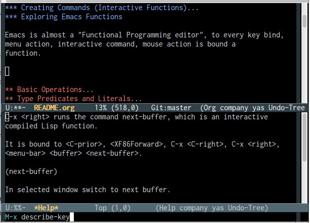
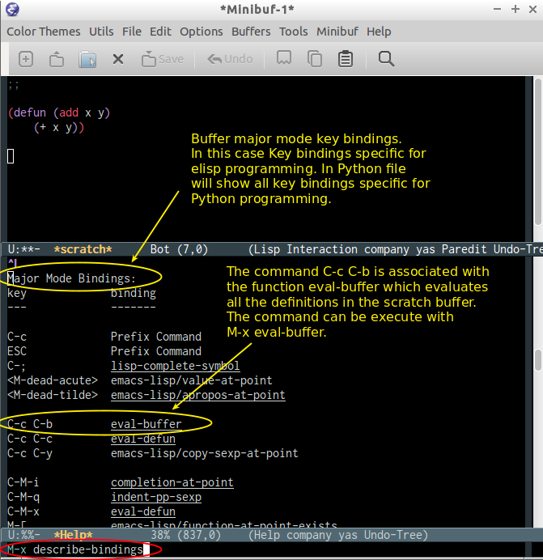
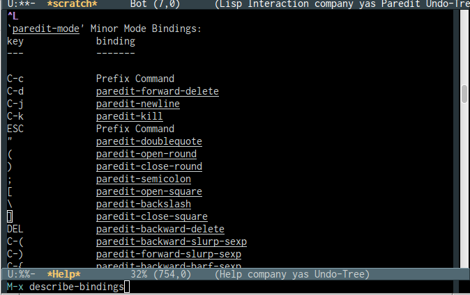
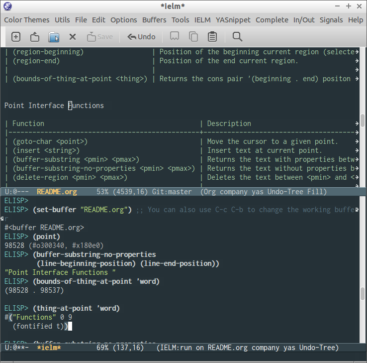
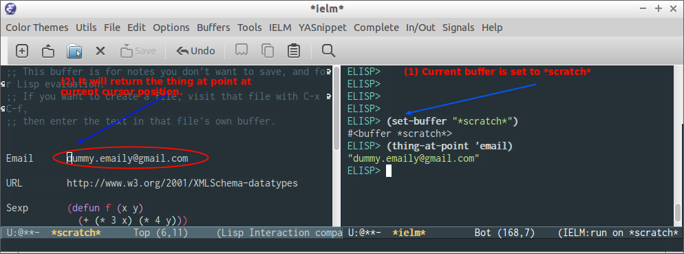
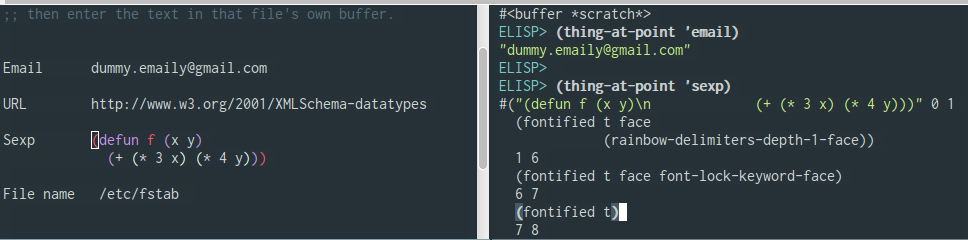
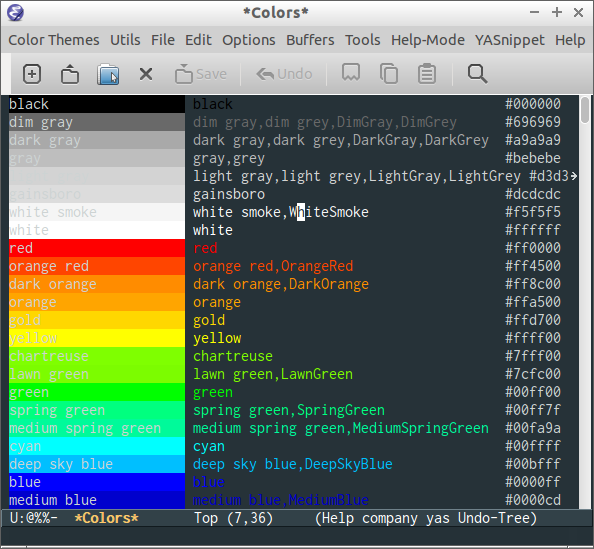

Elisp Programming
Table of Contents
- 1. Command Line Options
- 2. Elisp
- 2.1. Overview
- 2.2. Basic Operations
- 2.3. Type Predicates and Literals
- 2.4. Defining Variables
- 2.5. Defining Functions
- 2.6. List Operations
- 2.7. Association Lists and Property Lists
- 2.8. Strings
- 2.9. Symbols
- 2.10. Types Conversion
- 2.11. Eval
- 2.12. Defalias
- 2.13. Control Structures loop control iteration
- 2.14. Functional Programming
- 2.15. Structures
- 3. Macros and Metaprogramming macro lisp
- 4. Emacs API
- 4.1. Emacs Terminology
- 4.2. Emacs API
- 4.3. Discoverability / Get Documentation
- 4.4. Buffers
- 4.5. Point, Region, Line and Buffer
- 4.6. Message / Output output dialog
- 4.7. Files, Directories and Path api system file os
- 4.8. Window Functions api system window
- 4.9. OS Interface
- 4.10. Timer
- 4.11. Emacs Modes
- 4.12. Special Variables
- 4.13. Network
- 5. Regex - Regular Expressions
- 6. Color Scheme
- 7. Key Bindings
- 8. Emacs Packages
- 9. Solutions
- 9.1. Code Navigation with Occur edit
- 9.2. Shell Command Interface
- 9.3. Quick edit and reload Emacs Configuration File. elisp customization
- 9.4. Refresh/ Reload File
- 9.5. Creating Quick Access Menu
- 9.6. Extract Function Documentation elisp
- 9.7. Edit File as Root utils edit
- 9.8. Open Current Buffer Directory
- 9.9. Open Current Buffer Directory in File Manager
- 9.10. Open a terminal Emulator in the directory of Current Buffer
- 9.11. Eval String in Clipboard
- 9.12. Save and Reload Current Session
- 9.13. Create a menu with all color themes available
- 9.14. Better Menu Syntax
- 9.15. Save and Restore Current Window Configuration
- 9.16. Http and Post Request utils connections http
- 9.17. Test internet connection utils connection
- 10. Org-Mode org mode data ideas
1 Command Line Options
Start emacs ignoring the file:///home/arch/.emacs.d/init.el or file:///home/arch/.emacs configuration file.
$ emacs --no-init-file or $ emacs -q
Start Emacs with a custom configuration file:
$ emacs -q -l customstart.el
Debug Emacs configuration file: ~/.emacs.d/init.el or ~/.emacs
$ emacs --debug-init
To keep multiple configurations files see: Emacs Bootstrap Show Emacs version
$ emacs --version
2 Elisp
2.1 Overview
This section will use the Emacs interactive elisp shell IELM that can be accessed by typing M-x ielm. You can also use the scratch buffer to test Emacs features and elisp codes.
It is recommended to insert (require 'cl) in the Emacs init file that loads the library cl - Common Lisp Extension Library, that provides many useful common lisp functions and macros like remove-if, remove-if-not, cl-case and so on.
2.1.1 Using the Scratch Buffer and Interpreter
The scratch buffer is useful to evaluate Emacs lisp commands, test new features and test new Emacs configurations and dot emacs without need to reload Emacs.

C-x C-e at the end of s-expression displays the result of evaluation in the minibuffer.

C-j at the end of s-expression prints the result in the scratch buffer.

The scratch buffer can be used with the interpreter IELM, to open the interpreter type: C-x 3, put the cursor on the other window(C-x o) and type M-x ielm. By this way it is possible to evaluate expressions in the scratch buffer and test it in the shell.

The command M-x eval-expression which is bound to the key bind M-: can be used to evaluate Elisp commands in any buffer and test buffer local variables.
Example:
(insert (buffer-file-name (current-buffer)))


2.1.2 Creating Commands (Interactive Functions)
(defun buffer/insert-filename () "Insert file name of current buffer at current point" (interactive) (insert (buffer-file-name (current-buffer))))
Before:

After:

2.1.3 Exploring Emacs
- Function Bound to Key Binding
Emacs is almost a "Functional Programming editor", to every key bind, menu action, interactive command or mouse action is bound a function.
For example: to the key bind
C-x <right>is bound the interactive functionnext-bufferthat can be executed with M-x next-buffer.To learn which function is bound to key type:
M-x describe-keyand then type the key binding likeC-x <right>to pop up a window that shows the function bound to that key or just typeC-h-kand type the key combination.
- List All Defined Key Bindings
The command
M-x describe-bindingsor the key bindingC-h bshows a list of all defined keys and all functions that are associated to them in all modes, including the buffer major mode.Example:
C-h bin the scratch buffer (Elisp interactive mode).The picture shows the major mode key bindings (elisp interactive mode) for the scratch buffer.

This command also shows minor modes key bindings.
The image bellow shows the minor mode (pareddit) key bindings:

If the user select the function pareddit-kill (which is associated with the key binding
C-kin pareddit-mode) and type return, it will show the function documentation or what the key combination does.
- Function Documentation
Emacs keeps an in-memory documentation of all functions. To see the documentation type
M-x describe-functionorC h kand type the function name or put the cursor at the beggining of the function name and typeM-x describe-function.Example:
M-x describe-functionreplace-regexpThis can also be invoked with:
(describe-function 'replace-regexp)

2.2 Basic Operations
Arithmetic
ELISP> (+ 20 30) 50 ELISP> (- 100 80) 20 ELISP> (+ 1 2 3 4 5 6) 21 ELISP> (* 1 2 3 4 5 6) 720 ELISP> (/ 1 100) 0 ELISP> (> 10 1) ;; ?? 10 > 1 t ELISP> (< 2 8) ;; ?? 2 < 8 t ELISP> (< 8 2) ;; ?? 8 < 2 nil ELISP> (= 2 2) t ELISP> (= 2 4) nil ELISP> (/= 2 2) nil ELISP> (exp -1) 0.36787944117144233 ELISP> (log 10) 2.302585092994046 ELISP> (sin pi) 1.2246467991473532e-16 ELISP> (cos pi) -1.0 ELISP> (tan (/ pi 2)) 1.633123935319537e+16 ELISP>
Comparison
;;;; Compare Numbers ;;;;;;;;;;;;;;;;;;;;;;;;;; ELISP> (= 2 (+ 1 1)) t ;;; Compare Symbols and Numbers ;;;;;;;;;;;;;;;;;;;;;;;;;;;;; ELISP> (eq 1 1) t ELISP> (eq 1 2) nil ELISP> ELISP> (eq 'x 'x) t ELISP> ;;; Compare Elements of a List ;;;;;;;;;;;;;;;;;;;;;;;;;;;;;; ELISP> (equal (list 1 2 3 4) (list 1 2 3 4)) t ;;; Compare Strings ;;;;;;;;;;;;;;;;;;;;;;;;;;;;; ELISP> (string= "hello" "hello") t
Lists
ELISP> ELISP> '(10 20 30 40) (10 20 30 40) ELISP> '(10 203 40 "hello" () ("empty" 65)) (10 203 40 "hello" nil ("empty" 65)) ELISP>
2.3 Type Predicates and Literals
2.3.1 Emacs Literals
;;; Numbers ;;;;;;;;;;;;;;;;;;;;;;;;;;;;;;;;;;;;; ELISP> 1e3 1000.0 ;;; String ;;;;;;;;;;;;;;;;;;;;;;;;;;;;;;;;;;;;; ELISP> "Hello World Emacs Literals" "Hello World Emacs Literals" ELISP> ;;; Symbol ;;;;;;;;;;;;;;;;;;;;;;;;;;;;;;;;;;;;; ELISP> 'this-a-symbol this-a-symbol ELISP> 'vector->list vector->list ELISP> 'symbol? symbol\? ELISP> ;; Boolean t and nil ;;;;;;;;;;;;;;;;;;;;;;;;;;;;;;;;;;;;; ELISP> t t ELISP> nil nil ELISP> ;;; Everything that is not "nil" is true: ;;----------------------------------------- ELISP> (if t "It is true (not nil)" "It is false (it is nil)") "It is true (not nil)" ELISP> ELISP> (if 100e3 "It is true (not nil)" "It is false (it is nil)") "It is true (not nil)" ELISP> (if '(a b c d) "It is true (not nil)" "It is false (it is nil)") "It is true (not nil)" ELISP> ELISP> (if nil "It is true (not nil)" "It is false (it is nil)") "It is false (it is nil)" ELISP> ;;; Pair / Cons Cell ;;;;;;;;;;;;;;;;;;;;;;;;;;;;;;;;;;;;; ELISP> '(a . b) (a . b) ELISP> '(a . 2999) (a . 2999) ;;; List ;;;;;;;;;;;;;;;;;;;;;;;;;;;;;;;;;;;;; ELISP> '(1 2 3 (3 4) (5 6 (+ 3 4)) 10 'a 'b "hello" ) (1 2 3 (3 4) (5 6 (+ 3 4)) 10 'a 'b "hello") ELISP> '(+ 1 2 3 4 5) (+ 1 2 3 4 5) ELISP> '(cos 10) (cos 10) ;;; Vectors ;;;;;;;;;;;;;;;;;;;;;;;;;;;;;;;;;;;;; ELISP> [1 2 3 4 (+ 1 2 3 54)] [1 2 3 4 (+ 1 2 3 54)]
2.3.2 Basic Types Predicate
| Type | Predicate | Literal | Description |
|---|---|---|---|
| Nil | null | nil '() | Test if argument is nil |
| Number | numberp | 100, 200e3 | Test if it is number. |
| String | stringp | "hello" | Test if it is string |
| Symbol | symbolp | 'sym :keyworkd | Test if it is a symbol. |
| Atom | atom | 'x "h" :key 200 | Everything that is not a list or pair is an atom. |
| List | listp | '(1 2 x y) | Test if it is a list |
| Pair | consp | '( a . 200) | Test if it is a pair (cons cell) |
| Vector | vectorp | [1 200 'sym] | Test if it is a vector |
| Object | Predicate |
|---|---|
| Buffer | bufferp |
| Window | windowp |
| Frame | framep |
| Process | processp |
Examples:
ELISP> (null nil) t ELISP> ELISP> (null '()) t ELISP> (null 10) nil ELISP> (atom 10) t ELISP> (atom '(a . b)) nil ELISP> (atom "hello world") t ELISP> ELISP> (bufferp (current-buffer)) t ELISP> (bufferp (selected-window)) nil ELISP> (windowp (selected-window)) t ELISP>
2.3.3 Get Object Type
ELISP> (type-of (current-buffer)) buffer ELISP> ELISP> (type-of (selected-window)) window ELISP> ELISP> (equal 'buffer (type-of (current-buffer))) t ELISP> (equal 'buffer (type-of (selected-window))) nil ELISP>
2.4 Defining Variables
;;; Constants ;;;;;;;;;;;;;;;;;;;;;;;;;;;;;;;;;;; ELISP> (defconst zsh-shell "/usr/bin/zsh") zsh-shell ELISP> zsh-shell "/usr/bin/zsh" ELISP> ;;; Define a variable ;;;;;;;;;;;;;;;;;;;;;;;;;;;;;;;;;;; ;;;; Set is not used very much ;; ELISP> (set 'avar "hello world") "hello world" ELISP> avar "hello world" ELISP> ;;;;; The most used command for assignment is setq ;; ELISP> (setq x 10) 10 ELISP> (setq avar "hello world") "hello world" ELISP> x 10 ELISP> avar "hello world" ELISP> ELISP> (setq my-list '(10 20 30 40)) (10 20 30 40) ELISP> my-list (10 20 30 40) ;;; Multiple Assignment ;; ELISP> (setq a 10 b 20 c "Emacs") "Emacs" ELISP> a 10 ELISP> b 20 ELISP> c "Emacs" ELISP> ;; Dynamic Scoping (Local Variables) ;;;;;;;;;;;;;;;;;;;;;;;;;;;;;;;;;;;;; ;; ELISP> (let ((x 1) (y 10)) (+ (* 4 x) (* 5 y)) ) 54 ELISP> x 10 ELISP> y ** Eval error ** Symbol's value as variable is void: y ELISP>
2.5 Defining Functions
2.5.1 Define Simple Function
Syntax:
(defun <function name> (<parameters>) (<body>))
ELISP> (defun afunction (a b c) (+ a b c)) afunction ELISP> (afunction 10 20 30) 60 ELISP> (defun myfun () (message "Hello Emacs")) myfun ELISP> (myfun) "Hello Emacs" ELISP> ELISP> ELISP> (defun signum (n) (cond ((> n 0) 1 ) ((< n 0) -1) (0))) signum ELISP> (signum 10) 1 ELISP> (signum 0) 0 ELISP> (signum -23) -1 ELISP> ELISP> (defun factorial (n) (if (= n 0) 1 (* n (factorial (- n 1))))) factorial ELISP> (factorial 5) 120 ELISP
2.5.2 Anonymous Functions / Lambda Functions
Syntax:
(lambda (<parameters>) (<body>))
ELISP> (lambda (x) (+ x 3)) (lambda (x) (+ x 3)) ;;; Applying Lambda Functions ;; ELISP> ((lambda (x) (+ x 3)) 4) 7 ELISP> (funcall (lambda (x) (+ x 3)) 4) 7 ELISP> ;;; Storing Lambda Function in Variable ;; ;; ELISP> (defvar add3 (lambda (x) (+ x 3))) add3 ELISP> add3 (lambda (x) (+ x 3)) ELISP> (funcall add3 10) 13 ELISP> (add3 10) ** Eval error ** Symbol's function definition is void: add3 ELISP> (funcall #'add3 10) ** Eval error ** Symbol's function definition is void: add3 ELISP> ;;; Passing Lambda Function to functions ;; ELISP> (mapcar (lambda (x) (+ x 3)) '(1 2 3 4 5)) (4 5 6 7 8)
2.5.3 Passing Functions as Arguments
Functions must be passed with
(caller-function #'<function-1> #'<function-1> arg1 arg2 ...)
Inside the caller function the argument functions must be called using funcall:
(funcall function-1 arg1 arg2 ...)
Example:
ELISP> (mapcar log '(1 10 100 1000)) ** Eval error ** Symbol's value as variable is void: log ELISP> (mapcar #'log10 '(1 10 100 1000)) (0.0 1.0 2.0 3.0) (defun sum-fun (f1 f2 x) (+ (funcall f1 x) (funcall f2 x))) ELISP> (sum-fun #'log #'exp 3) 21.18414921185578 ELISP> ELISP> (+ (log 3) (exp 3)) 21.18414921185578 ELISP> ELISP> (sum-fun (lambda (x) (* 3 x)) (lambda (x) (* 4 x)) 5) 35 ELISP> ELISP> (defun 1+ (x) (+ 1 x)) 1+ ELISP> (defun 3* (x) (* 3 x)) 3* ELISP> (sum-fun #'1+ #'3* 4) 17 ELISP> ELISP> (sum-fun #'1+ (lambda (x) (* 3 x)) 4) 17 ELISP>
2.5.4 Variadic Functions
Functions with many arguments
(defun sum (&rest numbers) (apply #'+ numbers)) ELISP> (sum 1 2 3 4 5 6) 21 ELISP> (apply #'sum '(1 2 3 5 6)) 17 ELISP> (apply #'sum (list 1 2 3 5 (+ 6 5 2))) 24 ELISP> (apply #'sum '()) 0 ELISP> (apply #'sum nil) 0 ELISP> (sum nil) ** Eval error ** Wrong type argument: number-or-marker-p, ni ;;---------------------------------- (defun sum-prod (a &rest xs) (* a (apply #'+ xs))) ELISP> (sum-prod 3 1 2 3 4 5) 45 ELISP> (sum-prod 1 1 2 3 4 5) 15
2.5.5 Function with optional argument
(defun test-optional (a &optional b) (list a b)) ELISP> (test-optional 10 20) (10 20) ELISP> (test-optional 10 ) (10 nil) ;--------------------------------; (defun test-optional2 (a b &optional b c d e) (list :a a :b b :c c :d d :e e)) ELISP> (test-optional2 0 1 2 3 4 5 ) (:a 0 :b 2 :c 3 :d 4 :e 5) ELISP> (test-optional2 0 1 2 3 4 ) (:a 0 :b 2 :c 3 :d 4 :e nil) ELISP> (test-optional2 0 1 2 3 ) (:a 0 :b 2 :c 3 :d nil :e nil) ELISP> (test-optional2 0 1 2 ) (:a 0 :b 2 :c nil :d nil :e nil) ELISP> (test-optional2 0 1 ) (:a 0 :b nil :c nil :d nil :e nil) ELISP> (test-optional2 0 1) (:a 0 :b nil :c nil :d nil :e nil) ;--------------------------------; (defun test-optional-default-b (a &optional b) (if b (list a b) (list a "b is null"))) ELISP> (test-optional-default-b 1 2) (1 2) ELISP> (test-optional-default-b 1) (1 "b is null") ELISP> (test-optional-default-b 1 nil) (1 "b is null")
2.5.6 Functions with Property List argument
(defun make-shell-interface (&rest params) " Create a shell interface. Possible parameters: :name Name of shell :type ['sh, 'bash, ...] :path Path to program :buffer Name of buffer " (let ((name (plist-get params :name )) (type (plist-get params :type)) (path (plist-get params :path)) (buffer (plist-get params :buffer))) (list (cons 'name buffer) (cons 'type type) (cons 'path path) (cons 'buffer buffer)))) ELISP> (make-shell-interface :name "pylaucher" :path "/usr/bin/python" :type 'sh :buffer "pyshell") ((name . "pyshell") (type . sh) (path . "/usr/bin/python") (buffer . "pyshell")) ELISP> (make-shell-interface :name "pylaucher" :path "/usr/bin/python" :type 'sh) ((name) (type . sh) (path . "/usr/bin/python") (buffer)) ELISP> (make-shell-interface :name "pylaucher" :path "/usr/bin/python" :type 'bash) ((name) (type . bash) (path . "/usr/bin/python") (buffer)) ELISP> (make-shell-interface :name "pylaucher" :path "/usr/bin/python") ((name) (type) (path . "/usr/bin/python") (buffer)) ELISP> (make-shell-interface :name "pylaucher" ) ((name) (type) (path) (buffer)) ELISP> (make-shell-interface ) ((name) (type) (path) (buffer)) ELISP> (make-shell-interface :buffer "pyshell" :path "/usr/bin/python" :type 'sh :name "pylaucher") ((name . "pyshell") (type . sh) (path . "/usr/bin/python") (buffer . "pyshell"))
2.5.7 Closures
Emacs lisp dialect doesn't have closure by default, so the code below won't work like in Scheme and Common Lisp:
See also:
- Emacs Wiki - LexicalBinding
- Emacs Wiki - DynamicBinding Vs LexicalBinding
- Emacs Lisp Readable Closures
- Emacs Lisp: Closures Exposed
- lexical scoping and dynamic scoping in Emacs Lisp
(defun make-adder (x) (lambda (y) (+ x y))) ELISP> ELISP> (make-adder 3) (lambda (y) (+ x y)) ELISP> ((make-adder 3) 4) ** Eval error ** Invalid function: (make-adder 3) ELISP> (funcall (make-adder 3) 4) ** Eval error ** Symbol's value as variable is void: x ELISP> (map (make-adder 3) '(1 2 3 4 5)) ** Eval error ** Symbol's value as variable is void: x ELISP>
Now the code with closure enabled:
(setq lexical-binding t) (defun make-adder (x) (lambda (y) (+ x y))) ELISP> (make-adder 3) (closure ((x . 3) t) (y) (+ x y)) ELISP> ((make-adder 3) 4) ** Eval error ** Invalid function: (make-adder 3) ELISP> ELISP> (funcall (make-adder 3) 4) 7 ELISP> ELISP> (mapcar (make-adder 3) '(1 2 3 4 5)) (4 5 6 7 8) ;;;; Sometimes is better to create macro rather than a higher order function (defmacro make-sum-fun (f1 f2) `(lambda (x) (+ (,f1 x) (,f2 x)))) ELISP> ELISP> (funcall (make-sum-fun sin cos) 3) -0.8488724885405782 ELISP> ELISP> (make-sum-fun sin cos) (closure (t) (x) (+ (sin x) (cos x))) ELISP> (map (make-sum-fun sin cos) '(1 2 3 4 5)) (1.3817732906760363 0.4931505902785393 -0.8488724885405782 -1.4104461161715403 -0.6752620891999122)
To enable closures put the expression below the ~/.emacs.d/init.el file.
(setq lexical-binding t)
2.6 List Operations
See also:
- http://www.fincher.org/tips/Languages/Emacs.shtml
- http://www.emacswiki.org/emacs?search=%22ListModification%22
;; Defining a List ;; ;; An emacs list can contain elements of almost any type. ;; ELISP> '( "a" 2323 "b" 21.2323 "hello" "emacs" nil () (34 134) '(+ 2 3 5)) ("a" 2323 "b" 21.2323 "hello" "emacs" nil nil (34 134) '(+ 2 3 5)) ELISP> (quote (1 3 3 4 5)) (1 3 3 4 5) ;;;;; Empty List ;; ELISP> nil nil ELISP> '() nil ELISP> ;; Length of a list ELISP> (length '(1 2 3 4 5 6)) 6 ELISP> ;; nth element of a list ;; ELISP> (nth 0 '(0 1 2 3 4 5)) 0 ELISP> (nth 2 '(0 1 2 3 4 5)) 2 ELISP> (nth 5 '(0 1 2 3 4 5)) 5 ELISP> (nth 10 '(0 1 2 3 4 5)) nil ELISP> ;; Membership test ;; member returns null if the element is not member of the list ;; ELISP> (member 2 '(0 1 2 3 4 5)) (2 3 4 5) ELISP> (member 10 '(0 1 2 3 4 5)) nil ELISP> ;; Position of list element (prior to emacs 24.4) ;; ELISP> (position 7 '(5 6 7 8)) 2 ELISP> (position 17 '(5 6 7 8)) nil ELISP> ;; Position of list element (emacs 24.4 or later) ;; ELISP> (cl-position 7 '(5 6 7 8)) 2 ELISP> (cl-position 17 '(5 6 7 8)) nil ELISP> ;; cdr ;; ;; Removes first element of the list, returns the list tail. ;; ELISP> (cdr '(1 2 3 4 5)) (2 3 4 5) ;; car ;; ;; Returns the first list element ;; ELISP> (car '(1 2 3 4 5)) 1 ELISP> ;; cons ;; ;; List constructor ;; ELISP> (cons 10 '(1 2 3 4)) (10 1 2 3 4) ELISP> (cons 1 (cons 2 (cons 3 (cons 4 (cons 5 '()))))) (1 2 3 4 5) ;; Last element of a list ;; ;; ELISP> (car (last '(1 2 3 4 5))) 5 ELISP> ;; Reverse a list ;; ELISP> (reverse '(1 2 3 4 5)) (5 4 3 2 1) ;; Append lists ;; ;; Note: nil also means an empty list ;; ELISP> (append '(1 2) '( "a" "b" "c" "d")) (1 2 "a" "b" "c" "d") ELISP> (append '(1 2) nil '( "a" "b" "c" "d") nil) (1 2 "a" "b" "c" "d") ;; Filter list elements given a predicate function ;; ;; ELISP> (remove-if-not (lambda (x) (> x 2)) '(1 2 3 4 5 6 7 8 9 10)) (3 4 5 6 7 8 9 10) ;; Test if list is empty ;; ELISP> (null '(1 2 3 4 5)) nil ELISP> (null '()) t ELISP> (null nil) t ELISP> ;; Drop the firsts n elements of a list ;; ;; ELISP> (nthcdr 2 '(1 2 3 4)) (3 4) ELISP> (nthcdr 3 '(1 2 3 4)) (4) ELISP> (nthcdr 13 '(1 2 3 4)) nil ELISP> ;; Delete an element of a list ;; ;; ELISP> (delq 1 '(1 2 3 4)) (2 3 4) ELISP> (delq 10 '(1 2 3 4)) (1 2 3 4) ;; It doesn't work to delete sublists ;; ELISP> (delq (5) '(1 2 (5) 3 4)) ** Eval error ** Invalid function: 5 ELISP> (delq '(5) '(1 2 (5) 3 4)) (1 2 (5) 3 4) ELISP> (delete '(5) '(1 2 (5) 3 4)) (1 2 3 4) ;;;;;;;;;;;;;;;;;;;;;;;;;;;;;;;;;;;;; ;; Convert Vector to List ;; ;; ELISP> (coerce [1 2 3] 'list) (1 2 3) ;; Convert List to Vector ;; ELISP> (coerce '(1 2 3) 'vector) [1 2 3] ELISP> (number-sequence 0 10 2) (0 2 4 6 8 10) ELISP> (number-sequence 9 4 -1) (9 8 7 6 5 4) ;; Modify list variables. ;; ELISP> alist (a b c d e) ELISP> (push 'f alist) (f a b c d e) ELISP> alist (f a b c d e) ELISP> (pop alist) f ELISP> alist (a b c d e) ELISP> (pop alist) a ELISP> alist (b c d e) ELISP>
2.7 Association Lists and Property Lists
2.7.1 Overview
An association list is a list of cons pairs, that will be called here of clist or a list of lists of two elements each that will be called here of alist :
Association list of type: clist
Keys: a, x, 2 and 4 Values: b, y, 3 and (1 2 3 4 5)
ELISP> '((a . b) (x . y) (2 . 3) (4 . (1 2 3 4 5))) ((a . b) (x . y) (2 . 3) (4 1 2 3 4 5) ELISP> (cons 'a 'b) (a . b) ELISP> (cons 'a (cons 'b (cons 'c nil))) (a b c)
Not that in this list '(4 . (1 2 3 4)) becomes '(4 1 2 3 4) what makes this list ambiguous for associations with multiple elements. The list most used by Emacs API is the clist.
Assocation list of type: alist
ELISP> '((a b) (x y) (2 3) (4 (1 2 3 4 5))) ((a b) (x y) (2 3) (4 (1 2 3 4 5))) ELISP> (list (list 'a 'b) (list 'x 'y) (list 2 3) (list 2 '(1 2 3 4 5))) ((a b) (x y) (2 3) (2 (1 2 3 4 5)))
This type of list is not ambiguous like the clist.
Property Lists: Plist
Property lists are lists of consecutive pairs of keys and values. The advantage of this list is that it requires less parenthesis and it is more human readable.
'(:key1 value1 :key2 value2 :key3 1002.23 :key4 (a b c d e)) ELISP> '(:key1 value1 :key2 value2 :key3 1002.23 :key4 (a b c d e)) (:key1 value1 :key2 value2 :key3 1002.23 :key4 (a b c d e)) ;;; It is more useful in configuration files ( :key1 value1 :key2 value2 :key3 value3 :key4 (a b c d e ) )
2.7.2 Association List / Alist
Reference: Emacs Manual / Association Lists
ELISP> (setq dict '((pine . cones) (oak . acorns) (maple . seeds))) ((pine . cones) (oak . acorns) (maple . seeds)) ELISP> dict ((pine . cones) (oak . acorns) (maple . seeds)) ;; Get a cell associated with a key ;; ;;;;;;;;;;;;;;;;;;;;;;;;;;;;;;;;;;;;;;;; ELISP> ELISP> (assoc 'oak dict) (oak . acorns) ELISP> (assoc 'wrong dict) nil ;; Get a Key ;; ;;;;;;;;;;;;;;;;;;;;;;;;;;;;;;;;;;;;;;;;;; ELISP> (car (assoc 'oak dict)) oak ELISP> (cdr (assoc 'oak dict)) acorns ELISP> ELISP> (car (assoc 'oak dict)) oak ELISP> ;; Get all keys ;; ;;;;;;;;;;;;;;;;;;;;;;;;;;;;;;;;;;;;;;;;;;;;; ELISP> (mapcar #'car dict) (pine oak maple) ;; Get all values ;; ;;;;;;;;;;;;;;;;;;;;;;;;;;;;;;;;;;;;;;;;;;;;; ELISP> (mapcar #'cdr dict) (cones acorns seeds)
Example: Filter multiple keys
ELISP> (defvar language-list '( ("io" . ((:command . "io") (:description . "Run IO Language script"))) ("lua" . ((:command . "lua") (:description . "Run Lua script"))) ("groovy" . ((:command . "groovy") (:description . "Run Groovy"))) ("scala" . ((:command . "scala") (:cmdopt . "-Dfile.encoding=UTF-8") (:description . "Run Scala file with scala command"))) ("haml" . ((:command . "haml") (:exec . "%c %o %s") (:description . "Convert HAML to HTML"))) ("sass" . ((:command . "sass") (:exec . "%c %o --no-cac"))) )) language-list ELISP> (assoc "scala" language-list ) ("scala" (:command . "scala") (:cmdopt . "-Dfile.encoding=UTF-8") (:description . "Run Scala file with scala command")) ELISP> (assoc "lua" language-list ) ("lua" (:command . "lua") (:description . "Run Lua script")) ELISP> (assoc "wrong" language-list ) nil ELISP> (assoc ':command (assoc "scala" language-list )) (:command . "scala") ELISP> (cdr (assoc ':command (assoc "scala" language-list ))) "scala" ELISP> ELISP> (assoc ':description (assoc "scala" language-list )) (:description . "Run Scala file with scala command") ELISP> (cdr (assoc ':description (assoc "scala" language-list ))) "Run Scala file with scala command" ELISP> ELISP> (mapcar 'car language-list) ("io" "lua" "groovy" "scala" "haml" "sass") ELISP> (mapcar 'cdr language-list) (((:command . "io") (:description . "Run IO Language script")) ((:command . "lua") (:description . "Run Lua script")) ((:command . "groovy") (:description . "Run Groovy")) ((:command . "scala") (:cmdopt . "-Dfile.encoding=UTF-8") (:description . "Run Scala file with scala command")) ((:command . "haml") (:exec . "%c %o %s") (:description . "Convert HAML to HTML")) ((:command . "sass") (:exec . "%c %o --no-cac"))) ELISP> ELISP> (mapcar (lambda (x) ( list (car x) (cdr x) )) language-list) (("io" ((:command . "io") (:description . "Run IO Language script"))) ("lua" ((:command . "lua") (:description . "Run Lua script"))) ("groovy" ((:command . "groovy") (:description . "Run Groovy"))) ("scala" ((:command . "scala") (:cmdopt . "-Dfile.encoding=UTF-8") (:description . "Run Scala file with scala command"))) ("haml" ((:command . "haml") (:exec . "%c %o %s") (:description . "Convert HAML to HTML"))) ("sass" ((:command . "sass") (:exec . "%c %o --no-cac")))) ELISP> ELISP> (mapcar (lambda (x) ( list (car x) (assoc ':command (cdr x)) (assoc ':cmdopt (cdr x)) (assoc ':description (cdr x)) )) language-list) (("io" (:command . "io") nil (:description . "Run IO Language script")) ("lua" (:command . "lua") nil (:description . "Run Lua script")) ("groovy" (:command . "groovy") nil (:description . "Run Groovy")) ("scala" (:command . "scala") (:cmdopt . "-Dfile.encoding=UTF-8") (:description . "Run Scala file with scala command")) ("haml" (:command . "haml") nil (:description . "Convert HAML to HTML")) ("sass" (:command . "sass") nil nil)) ELISP> ELISP> (mapcar (lambda (x) ( list (car x) (cdr (assoc ':command (cdr x))) (cdr (assoc ':cmdopt (cdr x))) (cdr (assoc ':description (cdr x))) )) language-list) (("io" "io" nil "Run IO Language script") ("lua" "lua" nil "Run Lua script") ("groovy" "groovy" nil "Run Groovy") ("scala" "scala" "-Dfile.encoding=UTF-8" "Run Scala file with scala command") ("haml" "haml" nil "Convert HAML to HTML") ("sass" "sass" nil nil)) ELISP> ELISP> (defun get-value (alist key) (cdr (assoc key alist))) get-value ELISP> (get-value language-list "scala") ((:command . "scala") (:cmdopt . "-Dfile.encoding=UTF-8") (:description . "Run Scala file with scala command")) ELISP> (get-value language-list "lua") ((:command . "lua") (:description . "Run Lua script")) ELISP> ELISP> (get-value language-list "0") nil ELISP> ELISP> (defun get-key-value (alist key field) (cdr (assoc field (cdr (assoc key alist)) ))) get-key-value ELISP> ELISP> (get-key-value language-list "scala" ':description) "Run Scala file with scala command" ELISP> ELISP> (get-key-value language-list "scala" ':command) "scala" ELISP>
2.7.3 Property Lists
ELISP> (defvar plst (list :buffer (current-buffer) :line 10 :pos 2000)) plst ELISP> ELISP> (plist-get plst :line) 10 ELISP> (plist-get plst :pos) 2000 ELISP> (plist-get plst :buffer) #<buffer *ielm*> ELISP> ELISP> ELISP> (plist-get plst :buffdfds) nil ELISP> ELISP> (plist-member plst :buffer) (:buffer #<buffer *ielm*> :line 10 :pos 2000) ELISP> (plist-member plst :bufferasd) nil ELISP> ELISP> (plist-put plst :winconf (current-window-configuration)) (:buffer #<buffer *ielm*> :line 10 :pos 2000 :winconf #<window-configuration>) ELISP> plst (:buffer #<buffer *ielm*> :line 10 :pos 2000 :winconf #<window-configuration>) ELISP>
2.7.4 Converting Alists to Plists and vice-versa
;; Alist to plist (defun plist->alist (plist) (if (null plist) '() (cons (list (car plist) (cadr plist)) (plist->alist (cddr plist))))) ELISP> (plist->alist (list :x 10 :y 20 :name "point")) ((:x 10) (:y 20) (:name "point")) ;;; Converts association list to plist (defun alist->plist (assocl) (if (null assocl) '() (let ((hd (car assocl)) (tl (cdr assocl))) (cons (car hd) (cons (cadr hd) (alist->plist tl)))))) ;;; Converts plist to clist (List of cons pairs) (defun plist->clist (plist) (if (null plist) '() (cons (cons (car plist) (cadr plist)) (plist->clist (cddr plist))))) ELISP> (plist->clist (list :x 10 :y 20 :name "point")) ((:x . 10) (:y . 20) (:name . "point")) ;; Separates a property list into two lists of keys and values. ;; (defun plist->kv (plist) (let ((alist (plist->alist plist))) (cons (mapcar #'car alist) (mapcar #'cdr alist)))) ELISP> (setq al (plist->alist (list :x 10 :y 20 :name "point"))) ((:x 10) (:y 20) (:name "point")) ELISP> (alist->plist al) (:x 10 :y 20 :name "point") ELISP> (setq keylist '("M-i" 'previous-line "M-j" 'backward-char "M-k" 'next-line "M-l" 'forward-char)) ELISP> (setq kv (plist->kv keylist)) (("M-i" "M-j" "M-k" "M-l") ('previous-line) ('backward-char) ('next-line) ('forward-char)) ELISP> (car kv) ("M-i" "M-j" "M-k" "M-l") ELISP> (cdr kv) (('previous-line) ('backward-char) ('next-line) ('forward-char)) ELISP>
2.8 Strings
;; Split String ELISP> (split-string " two words ") ("two" "words") ELISP> ELISP> (split-string "o\no\no" "\n" t) ("o" "o" "o") ELISP> (split-string "Soup is good food" "o*" t) ("S" "u" "p" " " "i" "s" " " "g" "d" " " "f" "d") ELISP> ;; Format String ELISP> (format-time-string "%Y/%m/%d %H:%M:%S" (current-time)) "2015/06/26 06:10:04" ELISP> ELISP> ;; Concatenate Strings ELISP> (concat "The " "quick brown " "fox.") "The quick brown fox." ELISP> ELISP> (mapconcat 'identity '("aaa" "bbb" "ccc") ",") "aaa,bbb,ccc" ELISP> (split-string "aaa,bbb,ccc" ",") ELISP> (split-string "aaa,bbb,ccc" ",") ("aaa" "bbb" "ccc") ;; String Width ELISP> (string-width "hello world") 11 ELISP> ELISP> (substring "Freedom Land" 0 5) "Freed" ELISP> ELISP> (string-match "ce" "central park") 0 ELISP> (string-match "gt" "central park") nil ELISP> ;;;;; Misc ELISP> (make-string 5 ?x) "xxxxx" ELISP> (make-string 5 ?a) "aaaaa" ELISP> (make-string 5 ?r) "rrrrr" ELISP> (make-string 15 ?r) "rrrrrrrrrrrrrrr" ELISP>
Elisp Symbol / String Conversion
; Convert a symbol to string ;; ELISP> (symbol-name 'wombat) "wombat" ; Convert a String to Symbol ELISP> (intern "wombat") wombat
Read S-expression from String
ELISP> (read-from-string "( (POINT1 (X 10.2323) (Y 20.2323)) (POINT2 (x 0.2) (Y 923.23)) (POINT3 (x -10.5) (Y 78,23)) )") (((POINT1 (X 10.2323) (Y 20.2323)) (POINT2 (x 0.2) (Y 923.23)) (POINT3 (x -10.5) (Y 78 (\, 23)))) . 174) ELISP>
2.9 Symbols
;;; Convert a string to symbol ELISP> (intern "a-symbol") a-synmbol ELISP> (symbolp (intern "a-symbol")) t ELISP> ;;; Convert a symbol to a string ELISP> (symbol-name 'symbol) "symbol" ELISP> ;;;;;;;;;;;;;;;;;;;;;;;;;;;;;;;;;;;;;;;;;;;;;; ELISP> (setq sym '(1 2 3 4 5)) (1 2 3 4 5) ELISP> sym (1 2 3 4 5) ;;; Test if variable is defined ELISP> (boundp 'sym) t ELISP> ;;; Test if variable sym is a symbol ELISP> (symbolp sym) nil ;;; Test if the symbol sym is a symbol ELISP> (symbolp 'sym) t ELISP> ;; Get symbol as string ;; ELISP> (symbol-name 'sym) "sym" ;; Get value from a symbol ;; ELISP> (symbol-value 'sym) (1 2 3 4 5) ELISP> (symbol-function 'sym) nil ELISP> (symbol-plist 'sym) nil ;;-------------------------;; ELISP> (defun func (x y) (+ (* 3 x) (* 4 y))) func ELISP> (func 10 2) 38 ELISP> ;;; Check if function is defined ;; ELISP> (fboundp 'func) t ELISP> (fboundp 'sym) nil ELISP> ELISP> (symbol-name 'func) "func" ELISP> (symbol-value 'func) ** Eval error ** Symbol's value as variable is void: func ELISP> (symbol-function 'func) (lambda (x y) (+ (* 3 x) (* 4 y))) ELISP> (symbol-plist 'func) nil ELISP> ;;; Function Source Code ELISP> (symbol-function #'func) (lambda (x y) (+ (* 3 x) (* 4 y))) ;; Test if function is an elisp primitive ELISP> (subrp (symbol-function 'goto-char)) t ELISP>
2.10 Types Conversion
Query Types
ELISP> (type-of 1000) integer ELISP> (type-of 1000.3434) float ELISP> ELISP> (type-of "lisp") string ELISP> (type-of '(1 2 3 4 5)) cons ELISP> (type-of (list 'cos 'sin 1 2 3 4 5)) cons ELISP> ELISP> (type-of [1 2 3 4]) vector ELISP> (type-of 'elisp-mode-map) symbol ELISP> ELISP> (type-of #'cos) symbol ELISP>
Test Types
;; Test if it is a number ;;----------------------------------- ELISP> (numberp 1000) t ELISP> (numberp 10e4) t ELISP> (numberp '(1 2 3 4)) nil ELISP> (numberp "hello world") nil ELISP> ;; Test if it is a string ;;----------------------------------- ELISP> (stringp "Emacs") t ELISP> (stringp '(1 2 3 4)) nil ELISP> ;; Test if ti is a symbol ;;------------------------------------ ELISP> (symbolp 'emacs) t ELISP> (symbolp #'emacs) t ELISP> (symbolp "something") nil ELISP> (symbolp 10000) nil ELISP> ;; Test if it is a list ;;----------------------------------- ELISP> (listp '(1 2 3 4)) t ELISP> (listp [1 2 3 4]) nil ELISP> (listp "hello world") nil ELISP> ;; Test if it is a vector ;;----------------------------------- ELISP> (vectorp ["Lisp" "Emacs" "Scheme" "Clojure"]) t ELISP> ELISP> (vectorp '(1 2 3)) nil ELISP> (vectorp "lisp") nil ELISP>
Number <-> String
ELISP> ELISP> (number-to-string 1000) "1000" ELISP> (string-to-number "200") 200 ELISP> ELISP>
Symbol <-> String
ELISP> (symbol-name 'my-symbol) "my-symbol" ELISP> (symbol-name :my-symbol) ":my-symbol" ELISP>
String to Symbol
ELISP> (intern "some-symbol") some-symbol
S-expression <-> string
- read : Parse a s-expression.
ELISP> ELISP> (setq raw "(:x 10 :y 20 :z 30 :w \"hello world\")") "(:x 10 :y 20 :z 30 :w \"hello world\")" ELISP> ELISP> (read raw) (:x 10 :y 20 :z 30 :w "hello world") ELISP> (plist-get (read raw) :x) 10 ELISP> (plist-get (read raw) :w) "hello world" ELISP>
- prin1-to-string : Serialize a s-expression
ELISP> (setq sexp '(:x 10 :y 20 :z 30 :w "hello world")) (:x 10 :y 20 :z 30 :w "hello world") ELISP> sexp (:x 10 :y 20 :z 30 :w "hello world") ELISP> (prin1-to-string sexp) "(:x 10 :y 20 :z 30 :w \"hello world\")" ELISP>
2.11 Eval
Eval Sexp or S-expressions
ELISP> (eval '(+ 1 2 3 4 5)) 15 ELISP> ELISP> '(defun func1(x)(* 10 x)) (defun func1 (x) (* 10 x)) ELISP> ELISP> '((+ 1 3) (* 4 5) (- 8 9)) ((+ 1 3) (* 4 5) (- 8 9)) ELISP> (eval '(defun func1(x)(* 10 x))) func1 ELISP> (func1 5) 50 ELISP> ELISP> (mapcar 'eval '((+ 1 3) (* 4 5) (- 8 9))) (4 20 -1)
Eval Strings
ELISP> (defun eval-string (str) (eval (read str))) eval-string ELISP> (eval-string "(+ 1 2 3 4 5 6)") 21 ELISP> ELISP> (eval-string "(defun func2(x)(* 10 x)))") func2 ELISP> (func2 6) 60 ELISP>
S-expression/ Sexp to String
ELISP> (setq sexp1 '(+ 1 (* 2 3))) (+ 1 (* 2 3)) ELISP> (eval sexp1) 7 ELISP> (format "%S" sexp1) "(+ 1 (* 2 3))" ELISP>
Enter Emacs Lisp mode
M-x emacs-lisp-mode
Or
emacs-lisp-mode
Eval Commands in Elisp mode
References:
Evaluate the defun containing or after point, and print the value in the echo area (eval-defun).
M-x eval-defun or (eval-defun)
Evaluate all the Emacs Lisp expressions in the region.
M-x eval-region or (eval-region)
Evaluate all the Emacs Lisp expressions in the current buffer/ window.
M-x eval-buffer or (eval-buffer)
Open a prompt, request user input in current buffer and evalutes.
M-x eval-expression
Eval/ Load a File
M-x load-file or (load-file "/path/my_lisp_commands.el")
2.12 Defalias
The built-in macro defalias allows to define short and convenient names for Emacs functions.
See also: ErgoEmacs - Emacs: Use Alias for Fast M-x
ELISP> (require 'cl) cl ELISP> ELISP> (defalias 'map 'mapcar) map ELISP> (map (lambda (x) (* 3 x)) (list 1 2 3 4 5 6)) (3 6 9 12 15 18) ELISP> (defalias 'filter 'remove-if-not) ;; remove-if-not comes from "cl" library filter ;;; Filter all buffers bounded to a file ;; ELISP> (filter #'buffer-file-name (buffer-list)) (#<buffer README.org> #<buffer Projects.wiki.org> #<buffer Index.wiki.org> #<buffer settings.org> #<buffer project.org>) ;;; Reject all buffers which are not bounded to a file ELISP> (reject #'buffer-file-name (buffer-list)) (#<buffer *ielm*> #<buffer *Help*> #<buffer *Minibuf-1*> #<buffer emacs> #<buffer *scratch*> ..) ;;; The command M-x org-html-export-to-htm will export this document (README.org) to html ;; the command M-x org2html will do so too. ;; (defalias #'org2html #'org-html-export-to-html) ;; ;; It is also useful to create more convenient names for Emacs API ;; in a namsepace-like fashion that makes easier to find functions and ;; autocomplete functions, for instance: ;; (defalias 'file/extension 'file-name-extension) (defalias 'file/extension-sans 'file-name-sans-extension) (defalias 'file/path-expand 'expand-file-name) (defalias 'file/filename 'file-name-nondirectory) (defalias 'file/path-relative 'file-relative-name) (defalias 'file/rename 'rename-file) (defalias 'file/delete 'delete-file) (defalias 'file/copy 'copy-file) ;;; To find the documentation of a function group defined in this fashion ;; Enter M-x apropos and then type file/ (apropos "file/") ELISP> (set-buffer "README.org") #<buffer README.org> ELISP> (buffer-file-name) "/home/tux/PycharmProjects/emacs/README.org" ELISP> (file/basename (buffer-file-name)) "README" ELISP> (file/extension (buffer-file-name)) "org" ELISP> (file/filename (buffer-file-name)) "README.org" ELISP>
2.13 Control Structures loop control iteration
See also:
- Conditional Statement
If Else Statement
;; ;; Any value different from nil or '() is true, otherwise false. ;; ;; True ;; ELISP> (if t 5 6) 5 ELISP> (if 10 5 6) 5 ELISP> (if 0 5 6) 5 ;; False ELISP> (if nil 5 6) 6 ELISP> (if '() 5 6) 6 ;; Inverting Predicate ;; ELISP> (if (not t) 5 6) 6 ELISP> (if (not nil) 5 6) 5 ELISP> (if (< 5 10) (message "less than 10") (message "greater or equal to 10") ) "less than 10" ELISP> (if (< 30 10) (message "less than 10") (message "greater or equal to 10") ) "greater or equal to 10" ELISP> ;;; If else with multiple statements ELISP> (setq x 10) 10 ELISP> (if (> x 5) ;; Then Statement (progn (message "Positive Number") (print "Greater than five") (split-window-vertically) 78 ;; Return Value ) ;; Else Statement (progn (print "Less than five") (split-window-horizontally) 12 ;; Return Value )) "Greater than five" 78 ELISP>
When
ELISP> (when t 3) 3 ELISP> (when nil 3) nil ELISP> (setq x 5) 5 ELISP> (when (> x 3) (message "Less than 3")) "Less than 3" ELISP> ELISP> (setq x 1) 1 ELISP> (when (> x 3) (message "Less than 3")) nil ELISP> ;;;;; When with Multiple Statements ELISP> (setq x 10) 10 ELISP> (when (> x 7) (progn (message "Greater than 7 OK.") (message "Print message 2") (split-window-horizontally) )) #<window 8 on *ielm*> ELISP>
- Cond - Case Switch
ELISP> (setq a 3) ;; a = 3 3 ELISP> ELISP> (cond ((evenp a) a) ;; if (a % 2 == 0) ==> a ((> a 7) (/ a 2)) ;; elif (a > 7) ==> a/2 ((< a 5) (- a 1)) ;; elif (a < 5) ==> a-1 (t 7) ;; else ==> 7 ) 2 ELISP>
- CL-Case - Case Switch
(defun test-cl-case (operation x y) (cl-case operation (:mul (* x y)) (:add (+ x y)) (:sub (- x y)) (:div (/ x y)) (otherwise nil))) ELISP> (test-cl-case :mul 2 10) 20 ELISP> (test-cl-case :sub 10 2) 8 ELISP> (test-cl-case :add 10 2) 12 ELISP> (test-cl-case :div 10 2) 5 ELISP> (test-cl-case 'dummy 20 10) nil
- Loops
Dolist
ELISP> (dolist (h '(a b c)) (print h)) a b c nil ELISP> (dolist (x '(1 2 3)) (print (* 2 x))) 2 4 6 nil ELISP> ELISP> (dolist (x '(1 2 3)) (dolist (y '(a b)) (print (list x y)))) (1 a) (1 b) (2 a) (2 b) (3 a) (3 b) nil ELISP>
Dotimes
ELISP> (dotimes (i 3) (print i)) 0 1 2 nil ELISP ELISP> (dotimes (i 3) (print (* 2 i))) 0 2 4 nil ELISP>
Loop
It is better to use map and filter instead of loops. See the section: Functional Programming
ELISP> (setq a 4) 4 ELISP> (loop (setq a (+ a 1)) (when (> a 7) (return a))) 8 ELISP> a 8 ELISP> ELISP> (loop (setq a (- a 1)) (when (< a 3) (return))) nil ELISP> a 2 ELISP>
Loop Collecting / Summing / For
ELISP> (loop for i from 1 to 10 collecting i) (1 2 3 4 5 6 7 8 9 10) ELISP> (loop for i from 1 to 10 collecting (* 3 i)) (3 6 9 12 15 18 21 24 27 30) ELISP> (loop for x from 1 to 10 summing (expt x 2)) 385 ELISP> (loop for x from 1 to 10 collecting (* 2 x)) (2 4 6 8 10 12 14 16 18 20) ELISP> (loop for x from 1 to 10 summing (* 2 x)) 110 ELISP> ELISP> (apply #'+ '(2 4 6 8 10 12 14 16 18 20)) 110 ELISP> (loop for i below 10 collecting i) (0 1 2 3 4 5 6 7 8 9) ELISP> (loop for x in '(1 2 3) do (print x) ) 1 2 3 nil (loop for x in '(a b c) for y in '(1 2 3 4 5 6) collect (list x y)) ((a 1) (b 2) (c 3)) ELISP> (loop for (a b) in '((x 1) (y 2) (z 3)) collect (list b a)) ((1 x) (2 y) (3 z)) ELISP> (loop for i upto 20 if (oddp i) collect i into odds else collect i into evens finally (return (values evens odds))) ((0 2 4 6 8 10 12 14 16 18 20) (1 3 5 7 9 11 13 15 17 19))
Do loop
(do (variable-definition*) (end-test-form result-form*) statement*)Each variable definition introduces a variable that will be in scope in the body of the loop. The full form of a single variable definition is a list containing three elements.
(var init-form step-form)
(do ;; Variables Definitions ((i 0 (1+ i))) ;; Test form ((>= i 4)) ;; Statement form (print i)) 0 1 2 3 nil ;; Fibbonaci Computing Loop ;; (do ((n 0 (1+ n)) (cur 0 next) (next 1 (+ cur next))) ((= 10 n) cur)) 55
2.14 Functional Programming
See also: Dash Library Github repository Dash is functional programming library to Emacs with many useful higher order functions.
- Map and Filter
Mapcar / Equivalent to map
ELISP> (defun my-fun (x) (* x 10)) my-fun ELISP> ELISP> (mapcar 'my-fun '(1 2 3 5 6)) (10 20 30 50 60) ELISP> (mapcar 'capitalize '("hello" "world" "emacs")) ("Hello" "World" "Emacs") ;; Anonymous Functions ;; ELISP> (mapcar (lambda (x) (* x x)) '(1 2 3 4 5 6)) (1 4 9 16 25 36) ELISP> (setq anon (lambda (x) (* x x))) (lambda (x) (* x x)) ELISP> (mapcar anon '(1 2 3 4 5 6)) (1 4 9 16 25 36)
Filter
ELISP> (null nil) t ELISP> (null 23) nil ELISP> ;; Equivalent to Haskell idiom: ;; ;; > filter predicate list ;; ELISP> (remove-if-not 'null '(1 2 3 nil 5 6 nil nil )) (nil nil nil) ;; Equivalent to Haskell idiom: ;; ;; > filter (\x -> not (predicate x)) list ;; ;; a more apropriate name would be reject ;; ELISP> (remove-if 'null '(1 2 3 nil 5 6 nil nil )) (1 2 3 5 6) ELISP> (defun range (step start stop) (if (> start stop) nil (cons start (range step (+ step start) stop)) );; End If );; End range ELISP> (range 1 0 10) (0 1 2 3 4 5 6 7 8 9 10) ELISP> (range 2 0 20) (0 2 4 6 8 10 12 14 16 18 20) ELISP> (remove-if (lambda (x) (= (% x 2) 0)) (range 1 0 20)) (1 3 5 7 9 11 13 15 17 19) ELISP> (remove-if-not (lambda (x) (= (% x 2) 0)) (range 1 0 20)) (0 2 4 6 8 10 12 14 16 18 20) ELISP> (remove-if (lambda (x) (= (% x 3) 0)) (range 1 0 20)) (1 2 4 5 7 8 10 11 13 14 16 17 19 20) ELISP> (remove-if-not (lambda (x) (= (% x 3) 0)) (range 1 0 20)) (0 3 6 9 12 15 18) ELISP>
- Anonymous functions/ Lambda functions
ELISP> (lambda (x)(* x 10)) (lambda (x) (* x 10)) ELISP> ELISP> (funcall (lambda (x)(* x 10)) 5) 50 ELISP> ELISP> (setq my-lambda (lambda (x) (+ (* x 10) 5))) ;; 10 * x + 5 (lambda (x) (+ (* x 10) 5)) ELISP> (funcall my-lambda 10) 105 ELISP> (mapcar my-lambda '(1 2 3 4 5)) (15 25 35 45 55) ELISP> (setq double (function (lambda (x) (+ x x)) )) (lambda (x) (+ x x)) ELISP> (funcall double 22) 44 ELISP> ;; ;; Apply a function to a list of arguments ;; ;;;;;;;;;;; ELISP> (apply #'+ '(1 2 3 4 5)) 15 ELISP> ELISP> ELISP> (defun f (x y z) (+ (* 10 x) (* -4 y) (* 5 z))) f ELISP> (f 2 3 5) 33 ELISP> (apply 'f '(2 3 5)) 33 ELISP> (mapcar (lambda (x) (apply 'f x)) '( (2 3 5) (4 5 6) (8 9 5))) (33 50 69) ;; Create Higher Order Functions ;; ;;;;;;;;;;;;;;;;;;;;;;;;;;;;;;;;;;;;
- Function Composition
Credits: Elisp Function Composition
ELISP> ;; ID: f0c736a9-afec-3e3f-455c-40997023e130 (defun compose (&rest funs) "Return function composed of FUNS." (lexical-let ((lex-funs funs)) (lambda (&rest args) (reduce 'funcall (butlast lex-funs) :from-end t :initial-value (apply (car (last lex-funs)) args))))) compose ELISP> (funcall (compose 'prin1-to-string 'random* 'exp) 10) "4757.245739507558" ELISP>
- Interactive Functions
Interactive functions can be called using: M-x <function>. The user can create custom emacs commands with interactive functions.
(defun some-interactive-function () "Documentation" (interactive) ...)
Execute the function
M-x some-interactive-function> - List Recursive Functions
Map
(defun map (fun xs) (if (null xs) '() (cons (funcall fun (car xs)) (map fun (cdr xs))))) ELISP> (map #'buffer-name (buffer-list)) ("*ielm*" "*scratch*" " *Minibuf-1*" "*Backtrace*" "*eshell*" "sclj.import.scm" "*Messages*" "*GNU Emacs*" " *Minibuf-0*" " *code-conversion-work*" " *Echo Area 0*" " *Echo Area 1*" "*Shell Command Output*" "*Completions*") ELISP>
Filter
(defun filter (fun xs) (if (null xs) '() (let ((hd (car xs)) (tl (cdr xs))) (if (funcall fun hd) (cons hd (filter fun tl)) (filter fun tl))))) (defun odd? (x) (zerop (% x 2))) ELISP> (filter #'odd? '(1 2 3 4 5 6)) (2 4 6)
Take
(defun take (n xs) (if (or (null xs) (zerop n)) '() (cons (car xs) (take (- n 1) (cdr xs))))) ELISP> (take 5 '(a b c d e f g h i j)) (a b c d e) ELISP> (take 10 '(a b c d e f g h i j)) (a b c d e f g h i j) ELISP> (take 200 '(a b c d e f g h i j)) (a b c d e f g h i j) ELISP> (take 0 '(a b c d e f g h i j)) nil ELISP> (take 10 '()) nil ELISP>
Drop
(defun drop (n xs) (if (or (null xs) (zerop n)) xs (drop (- n 1) (cdr xs)))) ELISP> (drop 3 '(a b c d e f g h i j)) (d e f g h i j) ELISP> (drop 4 '(a b c d e f g h i j)) (e f g h i j) ELISP> (drop 25 '(a b c d e f g h i j)) nil ELISP>
Map-apply
Apply a function to a list of arguments
(defun map-apply (fun xss) (mapcar (lambda (xs) (apply fun xs)) xss)) ELISP> (map-apply #'fxyz '((1 2 3) (3 4 5) (2 3 1))) (17 35 20) ELISP> (fxyz 1 2 3) 17 ELISP> (fxyz 3 4 5) 35 ELISP> (fxyz 2 3 1) 20 ELISP>
Zip
(defun zip (&rest xss) (if (null (car xss)) '() (cons (mapcar #'car xss) (apply #'zip (mapcar #'cdr xss))))) ELISP> (zip (list 1 2 3 4) '(a b c d) '(x y z w)) ((1 a x) (2 b y) (3 c z) (4 d w))
Zipwith
(defun zipwith (f &rest xss) (map-apply f (apply #'zip xss))) ELISP> (zipwith #'f '(1 2 3) '(4 5 6) '(3 6 8)) (23 40 53) ELISP> (f 1 4 3) 23 ELISP> (f 2 5 6) 40 ELISP> (f 3 6 8) 53 ELISP>
Foldr
See: Fold - Higher Order Function
;; f :: x -> acc -> acc ;; foldr :: (a -> b -> b) -> b -> [a] -> b ;; foldr :: (x -> acc -> acc) -> acc -> [x] -> acc ;; foldr f z [] = z ;; foldr f z (x:xs) = f x (foldr f z xs) ;; ;; x = (car xss) , xs = (cdr xss) (defun foldr (f acc xss) (if (null xss) ;; foldr f z [] = z acc ;; foldr f z (x:xs) = f x (foldr f z xs) (funcall f (car xss) (foldr f acc (cdr xss))))) ELISP> (foldr (lambda (a b) (+ (* 10 b) a)) 0 '(1 2 3 4 5)) 54321 ELISP> ELISP> (foldr #'+ 0 '(1 2 3 4 5)) 15 ELISP>
Foldl
;; foldl :: (b -> a -> b) -> b -> [a] -> b ;; foldl f z [] = z ;; foldl f z (x:xs) = foldl f (f z x) xs (defun foldl (f acc xss) (if (null xss) acc (foldl f (funcall f acc (car xss)) (cdr xss)))) ELISP> (foldl (lambda (a b) (+ (* 10 a) b)) 0 '(1 2 3 4 5)) 12345 ELISP>
Map Pairs
(defun map-pair (func xs) (mapcar (lambda (x) (cons x (funcall func x))) xs)) ELISP> (map-pair #'1+ '(1 2 3 4)) ((1 . 2) (2 . 3) (3 . 4) (4 . 5)) ELISP> (map-pair #'log10 '(1 10 100 1000 10000)) ((1 . 0.0) (10 . 1.0) (100 . 2.0) (1000 . 3.0) (10000 . 4.0)) (defun buffer-mode (buffer-or-string) "Returns the major mode associated with a buffer." (with-current-buffer buffer-or-string major-mode)) ELISP> (map-pair #'buffer-mode (buffer-list)) ((#<buffer *ielm*> . inferior-emacs-lisp-mode) (#<buffer *scratch*> . lisp-interaction-mode) (#<buffer *Backtrace*> . debugger-mode) (#<buffer *GNU Emacs*> . fundamental-mode) (#<buffer *Minibuf-1*> . minibuffer-inactive-mode) (#<buffer *Minibuf-0*> . minibuffer-inactive-mode) (#<buffer *Messages*> . messages-buffer-mode)
Map pairs xy
(defun map-xypair (func-x func-y xs) (mapcar (lambda (x) (cons (funcall func-x x) (funcall func-y x))) xs)) ELISP> (map-xypair #'buffer-name #'buffer-mode (buffer-list)) (("*ielm*" . inferior-emacs-lisp-mode) ("*scratch*" . lisp-interaction-mode) ("*Backtrace*" . debugger-mode) ("*GNU Emacs*" . fundamental-mode) (" *Minibuf-1*" . minibuffer-inactive-mode) (" *Minibuf-0*" . minibuffer-inactive-mode) ("*Messages*" . messages-buffer-mode) (" *code-conversion-work*" . fundamental-mode) (" *Echo Area 0*" . fundamental-mode) (" *Echo Area 1*" . fundamental-mode) (" *http www.httpbin.org:80*" . fundamental-mode) (" *http www.httpbin.org:80*-820734" . fundamental-mode) (" *http www.httpbin.org:80*-914099" . fundamental-mode) (" *http www.httpbin.org:80*-945998" . fundamental-mode) ("*Help*" . help-mode) ("*Completions*" . completion-list-mode))
Juxt
Apply a list of functions to a single argument.
(defmacro juxt (&rest xs_f) `(lambda (x) (list ,@(mapcar (lambda (f) `(funcall ,f x)) xs_f)))) ELISP> (juxt #'buffer-name #'buffer-mode) ELISP> (juxt #'buffer-name #'buffer-mode) (lambda (x) (list ((funcall #'buffer-name x) (funcall #'buffer-mode x)))) ELISP> (funcall (juxt #'buffer-file-name #'buffer-name #'buffer-mode) (current-buffer)) (nil "*ielm*" inferior-emacs-lisp-mode) ELISP> (mapcar (juxt #'buffer-name #'buffer-file-name #'buffer-mode) (buffer-list)) (("*ielm*" nil inferior-emacs-lisp-mode) ("*scratch*" nil lisp-interaction-mode) ("passgen.py" "/home/tux/bin/passgen.py" python-mode) (".bashrc" "/home/tux/.bashrc" sh-mode) (" *Minibuf-1*" nil minibuffer-inactive-mode) ("init.el" "/home/tux/.emacs.d/init.el" emacs-lisp-mode) ("*Backtrace*" nil debugger-mode) ("*GNU Emacs*" nil fundamental-mode) (" *Minibuf-0*" nil minibuffer-inactive-mode) ("*Messages*" nil messages-buffer-mode) (" *code-conversion-work*" nil fundamental-mode) (" *Echo Area 0*" nil fundamental-mode) (" *Echo Area 1*" nil fundamental-mode) (" *http www.httpbin.org:80*" nil fundamental-mode) (" *http www.httpbin.org:80*-820734" nil fundamental-mode) (" *http www.httpbin.org:80*-914099" nil fundamental-mode) (" *http www.httpbin.org:80*-945998" nil fundamental-mode) ("*Help*" nil help-mode) ("*Completions*" nil completion-list-mode))
Map Juxt
Map a list of functions to a list:
(defmacro map-juxt (xs_f xs) `(mapcar (juxt ,@xs_f) ,xs)) ELISP> (map-juxt (#'buffer-name #'buffer-file-name #'buffer-mode) (buffer-list)) (("*ielm*" nil inferior-emacs-lisp-mode) ("*scratch*" nil lisp-interaction-mode) ("passgen.py" "/home/tux/bin/passgen.py" python-mode) (".bashrc" "/home/tux/.bashrc" sh-mode) (" *Minibuf-1*" nil minibuffer-inactive-mode) ("init.el" "/home/tux/.emacs.d/init.el" emacs-lisp-mode) ("*Backtrace*" nil debugger-mode) ("*GNU Emacs*" nil fundamental-mode) (" *Minibuf-0*" nil minibuffer-inactive-mode) ("*Messages*" nil messages-buffer-mode) ...
Lambda Function Macro
(defmacro $f (f &rest params) `(lambda ($) (,f ,@params))) ELISP> ($f - 10 $) (lambda ($) (- 10 $)) ELISP> ($f * (+ 3 $) 5) (lambda ($) (* (+ 3 $) 5)) ELISP> (funcall ($f * (+ 3 $) 5) 10) 65 ELISP> (mapcar ($f * (+ 3 $) 5) '(1 2 3 4 5)) (20 25 30 35 40) ELISP> ELISP> (mapcar ($f list (1+ $) (1- $) (log10 $)) '(1 10 100 1000)) ((2 0 0.0) (11 9 1.0) (101 99 2.0) (1001 999 3.0))
Partial Application
(defmacro $c (f &rest params) `(lambda (__x) (,f ,@params __x))) ELISP> (defun f (x y z) (+ (* 3 x) (* 2 y) (* 4 z))) f ELISP> (f 1 2 3) 19 ELISP> ($c f 1 2) (lambda (__x) (f 1 2 __x)) ELISP> (mapcar ($c f 1 2) '(1 2 3 4 5)) (11 15 19 23 27) ELISP> (mapcar ($c + 1 2) '(1 2 3 4 5)) (4 5 6 7 8) ELISP>
2.15 Structures
ELISP> (defstruct account id name balance) account ELISP> (make-account :id 3434 :name "John" :balance 1000.34) [cl-struct-account 3434 "John" 1000.34] ELISP> (setq user1 (make-account :id 3434 :name "John" :balance 1000.34)) [cl-struct-account 3434 "John" 1000.34] ELISP> (account-name user1) "John" ELISP> (account-id user1) 3434 ELISP> (account-balance user1) 1000.34 ;; Test if input is an account object ;; ;;;;;;;;;;;;;;;;;;;;;;;;;;;;;;;;;;;; ELISP> (account-p user1) t ELISP> ;; Change Field ;;;;;;;;;;;;;;;;;;;;;;;;;;;;;;;; ELISP> (defun withdraw (accc amount) (setf (account-balance acc) (- (account-balance acc) amount))) withdraw ELISP> (withdraw user1 300) 700.34 ELISP> user1 [cl-struct-account 3434 "John" 700.34] ELISP> (withdraw user1 500) 200.34000000000003 ELISP> user1 [cl-struct-account 3434 "John" 200.34000000000003] ELISP> ;; Build structure from a list of parameters ;; ;;;;;;;;;;;;;;;;;;;;;;;;;;;;;;;;;;;;;;;;;;;; ELISP> (defun build-account (id name balance) (make-account :id id :name name :balance balance)) build-account ELISP> (build-account 3434 "O' Neil" 35434.23) [cl-struct-account 3434 "O' Neil" 35434.23] ELISP> (apply 'build-account '(3434 "O' Neil" 35434.23)) [cl-struct-account 3434 "O' Neil" 35434.23] ELISP> ELISP> (mapcar (lambda (params) (apply 'build-account params)) '( (34423 "O' Neil" 23.2323) (1023 "John Edwards" 1002323.23) (92323 "Mr. Dummy" 2323241.2323) (8723 "John Oliver" 9823) )) ([cl-struct-account 34423 "O' Neil" 23.2323] [cl-struct-account 1023 "John Edwards" 1002323.23] [cl-struct-account 92323 "Mr. Dummy" 2323241.2323] [cl-struct-account 8723 "John Oliver" 9823]) ELISP> ELISP> (defun build-accounts-from-list (list-of-params) (mapcar (lambda (params) (apply 'build-account params)) list-of-params)) build-accounts-from-list ELISP> ELISP> (setq accounts (build-accounts-from-list '( (34423 "O' Neil" 23.2323) (1023 "John Edwards" 1002323.23) (92323 "Mr. Dummy" 2323241.2323) (8723 "John Oliver" 9823) ))) ([cl-struct-account 34423 "O' Neil" 23.2323] [cl-struct-account 1023 "John Edwards" 1002323.23] [cl-struct-account 92323 "Mr. Dummy" 2323241.2323] [cl-struct-account 8723 "John Oliver" 9823]) ELISP> accounts ([cl-struct-account 34423 "O' Neil" 23.2323] [cl-struct-account 1023 "John Edwards" 1002323.23] [cl-struct-account 92323 "Mr. Dummy" 2323241.2323] [cl-struct-account 8723 "John Oliver" 9823]) ELISP> (mapcar #'account-id accounts) (34423 1023 92323 8723) ELISP> ELISP> ELISP> (mapcar #'account-name accounts) ("O' Neil" "John Edwards" "Mr. Dummy" "John Oliver") ELISP> ELISP> (mapcar #'account-balance accounts) (23.2323 1002323.23 2323241.2323 9823) ELISP>
3 Macros and Metaprogramming macro lisp
Macros are useful to create new lisp special forms like if and when, create new control structures, domain specific languages, eliminate boilerplate code, automate code and redefine syntax. Elisp macro constructs has the same syntax of Common Lisp.
3.1 Quasi-quote
Quasi-quote is useful to create s-expression templates, data structure templates and lisp macros.
> (setq a 10) 10 > (setq b 20) 20 > (setq c 'my-symbol) my-symbol > (setq d "a string") "a string" ;;;; List of Symbols > '(a b c d) (a b c d) > (list 'a 'b 'c 'd ) (a b c d) ;;;; List of numbers > '(1 2.232 3523 23) (1 2.232 3523 23) > (list 1 2.232 3523 23) (1 2.232 3523 23) ;;;; List of symbol and numbers > '(1 2.232 3523 23 a b c d) (1 2.232 3523 23 a b c d) > (list 1 2.232 3523 23 'a 'b 'c 'd) (1 2.232 3523 23 a b c d) > (list 1 2.232 3523 23 a b c d) (1 2.232 3523 23 10 20 my-symbol "a string") ;;;; List with the variables a b c d > (list a b c d) (10 20 my-symbol "a string") ;;;; List with variables and symbols > (list 'a a 'b b 'c c 'd d) (a 10 b 20 c my-symbol d "a string") ;;;; Asssociaiton List > (list (cons 'a a) (cons 'b b) (cons 'c c) (cons 'd d)) ((a . 10) (b . 20) (c . my-symbol) (d . "a string")) ;;;; Quasiquote > `(the product of 3 and 4 is ,(* 3 4)) (the product of 3 and 4 is 12) > `("the product of 3 and 4 is" ,(* 3 4)) ("the product of 3 and 4 is" 12) > `("the value of (exp 3) is " ,(exp 3) "the value of (sqrt 100) is" ,(sqrt 100)) ("the value of (exp 3) is " 20.085536923187668 "the value of (sqrt 100) is" 10.0) > `(a ,a b ,b c ,c d ,d) (a 10 b 20 c my-symbol d "a string") > `((a . ,a) (b . ,b) (c . ,c) (d . ,d)) ((a . 10) (b . 20) (c . my-symbol) (d . "a string")) > (setq xs '(sym1 sym2 sym3)) (sym1 sym2 sym3) > xs (sym1 sym2 sym3) > `(xs ,xs) (xs (sym1 sym2 sym3)) > `(xs ,@xs) (xs sym1 sym2 sym3) > `(if (< ,a ,b) ,(+ a 4) ,d) (if (< 10 20) 14 "a string") > (eval `(if (< ,a ,b) ,(+ a 4) ,d)) 14 > > (eval `(if (> ,a ,b) ,(+ a 4) ,d)) "a string" ;;------------------ > (setq xlist '(1 2 3 4)) (1 2 3 4) > (setq ylist '(a b c d e)) (a b c d e) > `(xs ,xlist ys ,ylist) (xs (1 2 3 4) ys (a b c d e)) > `(xs ,@xlist ys ,@ylist) (xs 1 2 3 4 ys a b c d e)
3.2 Macros
Redefine lambda syntax to λ
(defmacro λ (args body) `(lambda ,args ,body)) ELISP> (λ (x) (+ x 3)) (lambda (x) (+ x 3)) ELISP> (mapcar (λ (x) (+ x 3)) '(1 2 3 4 5 6)) (4 5 6 7 8 9)
Set variable to nil
(defmacro nil! (var) `(setq ,var nil)) ELISP> (setq x 10) 10 ELISP> x 10 ELISP> ELISP> (nil! x) nil ELISP> x nil ELISP> ELISP> (nil! z) nil ELISP> z nil ELISP>
Create Clojure def, defn and fn special forms
(defmacro fn (args body) `(lambda ,args ,body)) (defmacro def (name value) `(setq ,name ,value)) (defmacro defn (name args body) `(defun ,name ,args ,body)) ELISP> (fn (x) (* x x)) (lambda (x) (* x x)) ELISP> (mapcar (fn (x) (* x x)) '(1 2 3 4 5)) (1 4 9 16 25) ELISP> (def x 1000) 1000 ELISP> x 1000 ELISP> ELISP> (defn f (x y z) (+ (* 3 x) (* -4 y) (* 5 z))) f ELISP> (f 4 5 6) 22 ELISP>
Clojure - Thread-First Macro
See also:
(defun foldl (f acc xss) (if (null xss) acc (foldl f (funcall f acc (car xss)) (cdr xss)))) (defun pass-result (x sexp) (if (listp sexp) `(,(car sexp) ,x ,@(cdr sexp)) `(,sexp ,x))) (defmacro -> (x &rest exprs) (foldl #'pass-result x exprs)) ;; The expression below is expanded to: ;; (-> 5 exp (/ 20) (+ 10 20) (- 3) log10) ELISP> (macroexpand '(-> 5 exp (/ 20) (+ 10 20) (- 3) log10)) (log10 (- (+ (/ (exp 5) 20) 10 20) 3)) Or (log10 (- (+ (/ (exp 5) 20) 10 20) 3)) ;;; How does the macro work ? ELISP> (pass-result 5 'exp) (exp 5) ELISP> (pass-result (pass-result 5 'exp) '(/ 20)) (/ (exp 5) 20) ELISP> (pass-result (pass-result (pass-result 5 'exp) '(/ 20)) '(+ 10 20)) (+ (/ (exp 5) 20) 10 20) ELISP>
Clojure - Thread-Last Macro
See: (->> x & forms)
(defun pass-result-last (x sexp) (if (listp sexp) `(,(car sexp) ,@(cdr sexp) ,x) `(,sexp ,x))) (defmacro --> (x &rest exprs) (foldl #'pass-result-last x exprs)) (--> 5 (/ 20) (+ 10 20) (- 16)) ;; Macro expansion ;;;(- 16 (+ 10 20 (/ 20 5))) ELISP> (--> 5 (/ 20) (+ 10 20) (- 16)) -18 ELISP
Thread-Substitute Macro
(defun replace (targ subst lst) (if (null lst) '() (let ((hd (car lst)) (tl (cdr lst))) (if (equal targ hd) (cons subst (replace targ subst tl)) (cons (if (listp hd) (replace targ subst hd) hd) (replace targ subst tl)))))) (defun pass-result-subst (x sexp) (if (listp sexp) (replace '$ x sexp) `(,sexp ,x))) (defmacro $-> (x &rest exprs) (foldl #'pass-result-subst x exprs)) ;;------------------------------------;; ELISP> (replace '$ 10 '(20 + $ * ( 3 + $ + 5 * (sqrt ($ - 5))))) (20 + 10 * (3 + 10 + 5 * (sqrt (10 - 5)))) ELISP> (macroexpand '($-> 500 (/ $ 20 ) (- 40 $) sqrt)) (sqrt (- 40 (/ 500 20))) ELISP> ($-> 500 (/ $ 20 ) (- 40 $) sqrt) 3.872983346207417 ELISP>
Clojure Let
(defmacro letc (bindings &rest body) `(let* ,(plist->alist bindings) ,@body)) ELISP> (letc ( a 10 b (+ a 3) c (+ a b) ) (list a b c)) (10 13 23) ELISP> ELISP> (macroexpand '(letc ( a 10 b (+ a 3) c (+ a b) ) (list a b c))) (let* ((a 10) (b (+ a 3)) (c (+ a b))) (list a b c)) ELISP>
Create Scheme Syntax define
(defmacro define (args body) (if (listp args) `(defun ,(car args) ,(cdr args) ,body) `(setq ,args ,body))) define ELISP> ELISP> (define x 50) 50 ELISP> x 50 ELISP> ELISP> (define (f x y) (+ (* 3 x) (* -4 y))) f ELISP> (f 5 6) -9 ELISP>
Rebind Elisp functions
Bind new names to existing elisp functions in order to create user friendly identifiers, for example, bind the symbol map to the function mapcar.
(defmacro rebindfun (new-name old-name) `(setf (symbol-function ,new-name) ,old-name)) ELISP> (rebindfun 'map #'mapcar) mapcar ELISP> ELISP> (map (lambda (x) (+ x 5)) '(1 2 3 4 5 6 7 8)) (6 7 8 9 10 11 12 13) ELISP> (rebindfun 'filter #'remove-if-not) remove-if-not ELISP> ELISP> (filter (lambda (x) (< x 10)) '(1 20 30 4 6 89 3 2 9 100)) (1 4 6 3 2 9) ELISP> (filter 'evenp '(1 2 3 4 5 6 7 8)) (2 4 6 8) ELISP> (filter 'oddp '(1 2 3 4 5 6 7 8)) (1 3 5 7 ;;; Commmon Lisp Way ELISP> (filter #'evenp '(1 2 3 4 5 6 7 8)) (2 4 6 8) ELISP> (filter #'oddp '(1 2 3 4 5 6 7 8)) (1 3 5 7)
Convert Infix Operator to prefix operator
(defmacro $ (a op b) `(,op ,a ,b)) ELISP> ELISP> ($ 1 < 10) t ELISP> ($ 1 > 10) nil ELISP> ELISP> (macroexpand '($ 1 > 10)) (> 1 10) ELISP> (if ($ 4 < 10) "Less than 10" "Greater than 10") "Less than 10" ELISP> ELISP> (if ($ 1444 < 10) "Less than 10" "Greater than 10") "Greater than 10" ELISP>
Debug Injection Macro
The function print can be replaced by message to display the debug message in the minibuffer. It is useful to debug callbacks.
(defmacro $debug (func &rest params) `(let ((__r (,func ,@params))) (progn (print (format "%s = %s" (quote (,func ,@params)) __r)) __r))) ;;; Usage: ELISP> ($debug + 10 ($debug * 10 30)) "(* 10 30) = 300" "(+ 10 ($debug * 10 30)) = 310" 310 ELISP>
4 Emacs API
4.1 Emacs Terminology
| Emacs Terminology | Description |
|---|---|
| Point | Cursor position, number of characters from beggining of the buffer to current cursor position. |
| Buffer | Place where the user edit something. Not all buffers are bound to a file. |
| Mark | Beginning of the selected area. |
| Region | Selected area/ text |
| Frame | The current window of emacs |
| Windows | Each frame can be split in sections that Emacs documentation calls windows |
| Fill | Word Wrap |
| Yank | Copy |
| Kill | Cut |
| Kill Ring | Clipboard |
| Mode Line | Status Bar |
| Font Locking | Syntax Coloring |
See also:

4.2 Emacs API
Emacs API Objects
- Buffer
- Temporary Buffer
- Modes
- Mode Hooks
- Mode Map
- Window
- Frame
- Point
- Process
- Network Process
- Minibuffers
Emacs API Limitations
- No multi-thread support. However it can handle well subprocesses.
- No directly file access. A file cannot be read directly, it must be read to a buffer and then the buffer must be read.
- There is no lexical scope or closures in Emacs Lisp as there is in Common Lisp and Scheme, however macros can be used as a work around to overcome this limitation.
- No tail call elimination, so loops must be used instead of recursion.
- No namespace support.
- Lack of modern widgets.
Despite the limitations of Emacs, it is one the few programmable text editors available, the ideal text editor would be a Scitilla IDE with a Emacs-like interface and a clojure-like programming language or Scheme.
Here some projects that tried to create a "better Emacs", "lisp powered" editor:
- Emacs on top of GNU Guile (Scheme)
JEmacs - the Java/Scheme-based Emacs Text Editor (Kawa - Scheme)
- Emacs implementation on top of Kawa Scheme (Scheme on JVM).
- Hemlock is an extensible Emacs-like text editor embedded in CMUCL (Common Lisp)
- Climacs - An Emacs-like editor in Common Lisp
- Deuce - An Emacs like editor implemented under Clojure, it stills a work in progress.
Emacs has more than 35 years of active development and no editor can beat it.
See also, from Emacs Wiki:
4.3 Discoverability / Get Documentation
Apropos
M-x <apropos command>
Apropos Commands
apropos apropos-command apropos-documentation info-apropos apropos-library apropos-variable apropos-value
4.3.1 Describe
See also:
Describe Function
This calls the command describe-function. Type a function name and get documentation of it.
ELISP> (describe-function <function-name>) or M-x describe-function or type the keys C-h f
Describe Variable
This calls the command describe-variable. Type the name of a variable at the prompt and press return. This displays the variable's documentation and value.
ELISP> (describe-variable <variable-name>) ELISP> (describe-variable 'load-path) M-x describe-variable or C-h v
4.4 Buffers
4.4.1 Buffer Attributes
List all Buffers
;; List of Buffers ELISP> (buffer-list) (#<buffer *ielm*> #<buffer Emacs.md> #<buffer *Help*> #<buffer *Minibuf-1*> #<buffer *shell*> #<buffer init.el> #<buffer *markdown-output*> #<buffer *Popup Shell*> #<buffer dummy.el> #<buffer *Minibuf-0*> #<buffer *code-conversion-work*> #<buffer *Echo Area 0*> #<buffer *Echo Area 1*> #<buffer *code-converting-work*> #<buffer pad> #<buffer *scratch*> #<buffer *Messages*> #<buffer *Flycheck error messages*> #<buffer *Completions*>)
Show Current Buffer
;; Show Current Buffer ;; ELISP> (current-buffer) #<buffer *ielm*> ELISP>
Name of all buffers
;; Name of all buffers ;; ELISP> (mapcar #'buffer-name (buffer-list)) ("*ielm*" "Emacs.md" "*Help*" " *Minibuf-1*" "*shell*" "init.el" "*markdown-output*" "*Popup Shell*" "dummy.el" " *Minibuf-0*" " *code-conversion-work*" " *Echo Area 0*" " *Echo Area 1*" " *code-converting-work*" "pad" "*scratch*" "*Messages*" "*Flycheck error messages*" "*Completions*")
File names of all buffers
;; ;; ELISP> (mapcar #'buffer-file-name (buffer-list)) (nil "/home/tux/.emacs.d/Emacs.md" nil nil nil "/home/tux/.emacs.d/init.el" nil nil "/home/tux/tmp/dummy.el" nil nil nil nil nil nil nil nil nil nil)
List all opened files
ELISP> (defun opened-files () "List all opened files in the current session" (interactive) (remove-if 'null (mapcar 'buffer-file-name (buffer-list)))) opened-files ELISP> (opened-files) ("/home/tux/.emacs.d/elutils.el" "/home/tux/.emacs.d/init.el" "/home/tux/PycharmProjects/ocaml/prelude/mtree.ml" "/home/tux/.emacs.d/ntmux.el" ...)
Kill Buffer
ELISP> (kill-buffer "pad") t ELISP> ELISP> (get-buffer "*scratch*") #<buffer *scratch*>
Open a File Programmatically
ELISP> (find-file "/etc/fstab") #<buffer fstab> ELISP> ;; Open a list of files programmatically ;; ELISP> (mapcar 'find-file '("/etc/hosts" "/etc/host.conf" "/etc/hosts.allow" "/etc/hosts.deny")) (#<buffer hosts> #<buffer host.conf> #<buffer hosts.allow> #<buffer hosts.deny>)
Find Buffer Associated With a File
ELISP> (defun find-buffer-file (filename) (car (remove-if-not (lambda (b) (equal (buffer-file-name b) filename)) (buffer-list)))) find-buffer-file ELISP> ELISP> (find-buffer-file "/etc/hosts.allow") #<buffer hosts.allow> ELISP> ELISP> (find-buffer-file "/etc/file_not_opened") nil ELISP> (mapcar 'find-buffer-file '("/etc/hosts" "/etc/host.conf" "/etc/hosts.allow" "/etc/hosts.deny")) (#<buffer hosts> #<buffer host.conf> #<buffer hosts.allow> #<buffer hosts.deny>)
Close a list of files
(mapcar (lambda (f) (kill-buffer (find-buffer-file f))) '("/etc/hosts" "/etc/host.conf" "/etc/hosts.allow" "/etc/hosts.deny")) ELISP> (defun close-files (filelist) (mapcar (lambda (f) (kill-buffer (find-buffer-file f))) filelist)) close-files ELISP> ;;;; Close All Files ;;;; ELISP> (close-files (opened-files)) (t t t t t t)
Create a New Buffer
;; ;; ;; This function returns a buffer named buffer-or-name. ;; The buffer returned does not become the current ;; buffer—this function does not change which buffer is current. ;; ELISP> (get-buffer-create "foobar") #<buffer foobar> ELISP> ;; ;; Divide the screen in two windows, and switch to the new buffer ;; window ;; ELISP> (switch-to-buffer-other-window "foobar") #<buffer foobar> ELISP> ;; Clean Current Buffer ;; ELISP> (erase-buffer) nil ELISP> ;; Edit another buffer and go back to the old buffer ;; ;;;;;;;;;;;;;;;;;;;;;;;;;;;;;;;;;;;;;;;;;;;;;;;;;;;;;;;;; ELISP> (defun within-buffer (name function) (let (curbuff (current-buffer)) (switch-to-buffer name) (funcall function) (switch-to-buffer current-buffer) )) ELISP> (within-buffer "foobar" (lambda () (insert "dummy"))) #<buffer *ielm*> ELISP> ELISP> (lambda (x)(* x 10)) (lambda (x) (* x 10)) ;;;; Translated from: http://d.hatena.ne.jp/rubikitch/20100201/elispsyntax ;; ELISP> ;; test-buffer Create a buffer named, to write a variety of content (with-current-buffer (get-buffer-create "test-buffer") ;; Empty the contents of the buffer (erase-buffer) ;; /tmp/foo.txt Make the contents inserted (insert-file-contents "/etc/fstab") ;; Insert a string (insert "End\n") ;; Write the contents of a buffer to a file (write-region (point-min) (point-max) "/tmp/bar.txt")) nil ELISP>
4.4.2 Buffer Mode
Show Buffers Mode
ELISP> (defun buffer-mode (buffer-or-string) "Returns the major mode associated with a buffer." (with-current-buffer buffer-or-string major-mode)) buffer-mode ELISP> (mapcar (lambda (b)( let ( (name (buffer-name b)) (type (buffer-mode (buffer-name b))) ) (list name type) )) (buffer-list)) (("*ielm*" inferior-emacs-lisp-mode) ("*SPEEDBAR*" speedbar-mode) (" *Minibuf-1*" minibuffer-inactive-mode) ("*scratch*" emacs-lisp-mode) ("test3.ml" tuareg-mode) ("*Help*" help-mode) ("*Messages*" messages-buffer-mode) ("sbet.ml" tuareg-mode) (" *Minibuf-0*" minibuffer-inactive-mode) ("test.el" emacs-lisp-mode) ... ... ("ocsv.ml" tuareg-mode) ("parser.ml" tuareg-mode) ("prelude.back.ml" tuareg-mode) ("prelude.ml" tuareg-mode) ("sbet.m" objc-mode) ("*etags tmp*" fundamental-mode) ("*compilation*" compilation-mode) ("mli" fundamental-mode) ("test3.mli" tuareg-mode) ("*Completions*" completion-list-mode))
4.4.3 Get Buffer Contents / Selection / Line
Get Buffer Content as String
ELISP> (defun buffer-content (name) (with-current-buffer name (buffer-substring-no-properties (point-min) (point-max) ))) buffer-content ELISP> ELISP> (buffer-content "test3.ml") "\n\nlet rec prodlist = function \n | [] ... "
Get Selected text in current buffer as string
You can test the function: select a text in any buffer, enter M-x get-selection, it will print in another window the selected text
(defun get-selection () "Get the text selected in current buffer as string" (interactive) (buffer-substring-no-properties (region-beginning) (region-end)) )
Get current line in current buffer
To test it: M-x eval-expression and enter (get-current-line)
(defun get-current-line () (interactive) "Get current line, where the cursor lies in the current buffer" (replace-regexp-in-string "[\n|\s\t]+$" "" (thing-at-point 'line t)) )
4.4.4 Search and Replace in the entire Buffer
Source: How to search and replace in the entire buffer? Usage: A-x replace-regexp-entire-buffer
(defun replace-regexp-entire-buffer (pattern replacement) "Perform regular-expression replacement throughout buffer." (interactive (let ((args (query-replace-read-args "Replace" t))) (setcdr (cdr args) nil) ; remove third value returned from query---args args)) (save-excursion (goto-char (point-min)) (while (re-search-forward pattern nil t) (replace-match replacement))))
4.5 Point, Region, Line and Buffer
4.5.1 Point
Point is the number of characters from the beginning of the buffer to
the current cursor location, or cursor position for short. To see the
function documentation type C-h-f and enter the function name or
M-x describe-function.
Point
| Function | Description |
|---|---|
| (point) | Current cursor position |
| (point-min) | Minimum cursor position in current buffer. (always returns 1) |
| (point-max) | Maximum cursor position in current buffer. |
| (line-beginning-position) | Point of the beginning of current line. |
| (line-end-position) | Point of the end of current line. |
| (region-beginning) | Position of the beginning current region (selected text). |
| (region-end) | Position of the end current region. |
| (bounds-of-thing-at-point <thing>) | Returns the cons pair '(beginning . end) position of thing at point. |
Point Interface Functions
| Function | Description |
|---|---|
| (goto-char <point>) | Move the cursor to a given point. |
| (insert <string>) | Insert text at current point. |
| (buffer-substring [pmin] [pmax]) | Returns the text with properties between the points <pmin> and <pmax>. |
| (buffer-substring-no-properties [pmin] pmax]) | Returns the text without properties between the points. |
| (delete-region [pmin] [pmax]) | Deletes the text between <pmin> and <pmax>. |
To test the functions described in this section the current buffer must be set to another buffer using the fuctions
(set-buffer <buffer-name or buffer-object>)
or enter C-c C-b when using the IELM.
Example:

Examples:
> (point) 99696 > (point-min) 1 > (point-max) 185623 > (line-beginning-position) 99774 > (line-end-position) 99804 > (buffer-substring-no-properties (line-beginning-position) (line-end-position)) (defun delete-line () (interactive) (delete-region (line-beginning-position) (line-end-position))) (defun delete-region () (interactive) (delete-region (region-beginning) (region-end))) (defun insert-end-of-buffer () (interactive) ;; Save Current Cursor Position ;; and go back to initial positon when ;; finish this block (save-excursion (goto-char (point-max)) ;;; Go to end of buffer (insert "Testing insert end of buffer") ))
4.5.2 Thing at Point API
See also:
- EmacsWiki: Thing At Point
- Emacs Lisp: Using thing-at-point
- Emacs Lisp: Functions for Processing Lines
- Emacs Lisp: Problems of thing-at-point
From the documentation:
(thing-at-point THING &optional NO-PROPERTIES)
Return the THING at point THING should be a symbol specifying a type of syntactic entity.
Possibilities include `symbol', `list', `sexp', `defun', `filename', `url', `email', `word', `sentence', `whitespace', `line', `number', and `page'.
When the optional argument NO-PROPERTIES is non-nil, strip text properties from the return value.
Example:
(thing-at-point 'email)

(thing-at-point 'sexp)

ELISP> (set-buffer "*scratch*") #<buffer *scratch*> ELISP> (let* ((bounds (bounds-of-thing-at-point 'sexp)) (pmin (if bounds (car bounds) nil)) (pmax (if bounds (cdr bounds) nil)) ) (if (and pmin pmax) (buffer-substring-no-properties pmin pmax))) "(defun f (x y)\n (+ (* 3 x) (* 4 y)))" ELISP>

4.6 Message / Output output dialog
4.6.1 message
Display a message at the bottom of the screen.
Example:
(message "Hello world")
Output:

4.6.2 message-box
Display a message, in a dialog box if possible. If a dialog box is not available, use the echo area.
(message-box FORMAT-STRING &rest ARGS)
ELISP> (message-box "Time for a break.\nDrink some coffee") "Time for a break.\nDrink some coffee"

4.7 Files, Directories and Path api system file os
4.7.1 Basic Functions
;; Get and Set current directory ELISP> (pwd) "Directory /home/tux/tmp/" ELISP> (cd "/etc/") "/etc/" ELISP> (pwd) "Directory /etc/" ELISP> ELISP> (file-name-directory "/etc/hosts") "/etc/" ;; Expand File Name ;; ELISP> (expand-file-name "~/") "/home/tux/" ELISP> (expand-file-name ".") "/home/tux/tmp" ELISP> (expand-file-name "..") "/home/tux" ELISP> ;;;;; Create a Directory ;;; ELISP> (mkdir "dummy") nil ELISP> (mkdir "dummy") ** Eval error ** File exists: /home/tux/dummy ELISP> ;;; List Directory ;;;; ;;; ELISP> (directory-files "/home/tux/PycharmProjects/Haskell/") ("." ".." ".git" ".gitignore" ".idea" "LICENSE" "Make" "Makefile" "README.back.md" "README.html" "README.md" "Test.html" "build.sh" "clean.sh" "codes" "dict.sh" "haskell" "ocaml" "papers" "tags" "tmp")
4.7.2 File Name Components
Emacs Manual: File Name Components
ELISP> (file-name-directory "/usr/bin/env") "/usr/bin/" ELISP> ELISP> (file-name-nondirectory "/usr/bin/env") "env" ELISP> ELISP> (file-name-base "/home/foo/zoo1.c") "zoo1" ELISP> (file-name-base "/home/foo/zoo1.c.back") "zoo1.c"
4.7.3 Read / Write file to a string
Read File
ELISP> (defun file-contents (filename) (interactive "fFind file: ") (with-temp-buffer (insert-file-contents filename) (buffer-substring-no-properties (point-min) (point-max)))) ELISP> (file-contents "/proc/filesystems") "nodev sysfs\nnodev rootfs\nnodev ramfs\nnodev bdev\nnodev proc\nnodev cgroup\nnode ...
Write to File
ELISP> (append-to-file "hello world" nil "/tmp/hello.txt") nil ELISP> (file-contents "/tmp/hello.txt") "hello world" ELISP>
4.8 Window Functions api system window
4.8.1 Basic Window Functions
Original Window before be changed.

Split Window Horizontally
ELISP> (split-window-horizontally) #<window 6 on *ielm*>

Delete Other Windows
ELISP> (delete-other-windows) nil ELISP>

Split Window Vertically
ELISP> (split-window-vertically) #<window 10 on *ielm*> ELISP>

Switch to Buffer on other window.
ELISP> (switch-to-buffer-other-window "init.el") #<buffer init.el> ELISP>

Delete Current Window
ELISP> (split-window-vertically) #<window 18 on *ielm*> ELISP> (switch-to-buffer-other-window "init.el") #<buffer init.el>

ELISP> (delete-window) nil ELISP>

Launch a new frame
ELISP> (make-frame) #<frame emacs@tuxhorse 0x9651518> ELISP>

;;; List Frames: ELISP> (frame-list) (#<frame /home/tux/.emacs.d/init.el 0x95fe518> #<frame *ielm* 0x9651518>) ELISP> ;; Close the new frame ;; ELISP> (delete-frame) nil ELISP>
4.8.2 Manipulate Buffer in Another Window
Description: Split window vertically, create a new buffer not associated to a file named dummy, and switch to this buffer on the second window and set the current buffer to dummy.
ELISP> (split-window-vertically) #<window 22 on *ielm*> ELISP> (setq dummy-buffer (get-buffer-create "dummy")) #<buffer dummy> ELISP> (switch-to-buffer-other-window dummy-buffer) #<buffer dummy> ELISP> (set-buffer dummy-buffer) #<buffer dummy> ELISP>

Description: Insert some text on the buffer dummy.
ELISP> (insert "Testing Emacs GUI capabilities") nil ELISP>

Description: Redirect a shell command to the dummy buffer.
ELISP> (print (shell-command-to-string "lsusb") dummy-buffer) ;; ;; Or it could be: ;; ;; (insert (shell-command-to-string "lsusb"))

Description: Erase Dummy buffer:
ELISP> (erase-buffer) nil ELISP>

Change Buffer Safely:
ELISP> (with-current-buffer dummy-buffer (insert (shell-command-to-string "uname -a"))) nil ELISP>

Other Window Operations
;; List all Opened windows ;; ELISP> (window-list) (#<window 18 on *ielm*> #<window 22 on dummy> #<window 12 on *Minibuf-1*>) ;; List the buffer of each window ;; ELISP> (mapcar 'window-buffer (window-list)) (#<buffer *ielm*> #<buffer dummy> #<buffer *Minibuf-1*>) ;; List the buffer name of each window ;; ELISP> (mapcar (lambda (w)(buffer-name (window-buffer w))) (window-list)) ("*ielm*" "dummy")
4.8.3 Window Configuration
The function current-window-configuration returns the current emacs window configuration.
ELISP> (current-window-configuration) #<window-configuration>
Save the current window configuration to variable w
ELISP> (setq w (current-window-configuration)) #<window-configuration> ELISP> w #<window-configuration> ELISP>

Change the Window configuration and buffers:

Restore the window configuration.
;; Change the windows, buffers and then restore the the current window. ;; ELISP> ELISP> (set-window-configuration w) t ELISP>

Not Compiled Yet.
balance-windows delete-other-windows delete-window delete-windows-on display-buffer shrink-window-if-larger-than-buffer switch-to-buffer switch-to-buffer-other-window other-window other-window-for-scrolling ;; Open a new Emacs Window (make-frame) ;; Screen Resolution ELISP> (x-display-pixel-width) 1366 ELISP> (x-display-pixel-height) 768 ELISP> ELISP> ;; Resize and Set Emacs Windows position ;; ;; From: http://uce.uniovi.es/tips/Emacs/mydotemacs.html#sec-41 ;; ;;;;;;;;;;;;;;;;;;;;;;;;;;;;;;;;;;;;;;;;;;;;; ELISP> (defun resize-frame () "Set size" (interactive) (set-frame-width (selected-frame) 100) (set-frame-height (selected-frame) 28) (set-frame-position (selected-frame) 0 1)) resize-frame ELISP> ELISP> (resize-frame) t ELISP>
4.9 OS Interface
4.9.1 Find the current operating system
The variable system-type indicates the current operating system.
| Value | Description |
|---|---|
| gnu | GNU Hurd system. |
| gnu/linux | GNU/Linux system. |
| gnu/kfreebsd | GNU system with a FreeBSD kernel. |
| darwin | Darwin (GNU-Darwin, Mac OS X) |
| ms-dos | MS-DOS application. |
| windows-nt | native W32 application. |
| cygwin | compiled using the Cygwin library |
Example:
ELISP> system-type gnu/linux ;; Dispatch by operating system ;; ELISP> (cl-case system-type (cywing "Running cywing") (darwing "Running Mac Osx") (gnu/linux "Running Linux") ) "Running Linux"
4.9.2 Date and Time
;;; ;;; Print Current Time ;;; ;;;;;;;;;;;;;;;;;;;;;;;;;;;;;;;;;;;;;;;;;;;;;;; ;; (current-time-string) ;;;;;;;;;; "Sun Jun 21 06:10:28 2015" ;; Year-Month-Day: (insert (format-time-string "%Y-%m-%d")) ;; Hour:Minutes:Seconds (insert (format-time-string "%H-%M-%S")) ;; Format Current Time ;; ;;;;;;; ELISP> (format-time-string "%d/%m/%Y %H:%M:%S" (current-time)) "27/06/2015 22:05:10" ELISP>
4.9.3 Call External Commands or Apps
;;; Call External Command ;;;;;; ;; It will launch Lxterminal ;;;;;;;;;;;;;;;;;;;;;;;;;;;;;;;;;... ELISP> (call-process "lxterminal") 0 ELISP> ;; Shell Command to String ;;;;;;; ELISP> (shell-command-to-string "pwd") "/home/tux/PycharmProjects/ocaml/prelude\n" ELISP ELISP> (shell-command-to-string "uname" ) "Linux\n" ELISP> (shell-command-to-string "uname -a" ) "Linux tuxhorse 3.19.0-18-generic #18-Ubuntu SMP Tue May 19 18:30:59 UTC 2015 i686 i686 i686 GNU/Linux\n" ELISP>
4.9.4 Environment Variables
Emacs Manual: Environment Variables
;; Environment Variables ;; ELISP> (getenv "PATH") "/usr/local/sbin:/usr/local/bin:/usr/sbin:/usr/bin" ELISP> ELISP> (split-string (getenv "PATH") ":") ("/usr/local/sbin" "/usr/local/bin" "/usr/sbin" "/usr/bin") ELISP> (dolist (e (split-string (getenv "PATH") ":")) (princ (format "%s\n" e))) /usr/local/sbin /usr/local/bin /usr/sbin /usr/bin ;; Alternative: See exec-path variable ;; ELISP> exec-path ("/usr/local/sbin" "/usr/local/bin" "/usr/sbin" "/usr/bin" "/usr/lib/emacs/24.5/x86_64-unknown-linux-gnu") ELISP> (getenv "HOME") "/home/tux" ;; Set Environment Variables ;; ELISP> (setenv "JAVA_HOME" "/usr/local/java") "/usr/local/java" ELISP> (setenv "LANG" "en_US.UTF8") "en_US.UTF8" ELISP> (getenv "LANG") "en_US.UTF8" ELISP> ;; Detect Operating System ;; ;; ELISP> system-type gnu/linux ELISP> ;; Test if the operating system is Linux ELISP> (eq system-type 'gnu/linux) t ELISP> ;;; Show all Evironment Variables ELISP> (dolist (e process-environment) (princ (format "%s\n" e))) JDK_HOME=/opt/java EDITOR=vim MANPATH=:/home/tux/.opam/4.02.1/man QT_PLATFORM_PLUGIN=lxqt LC_PAPER=pt_BR.UTF-8 PYTHONPATH=/home/tux/lib ;; Insert at cursor position all Enviroment Variables ;; ;; Copy it to scratch buffer and type C-x C-e to eval this S-expression ;; > (dolist (e process-environment) (insert (format "%s\n" e))) JDK_HOME=/opt/java EDITOR=vim MANPATH=:/home/tux/.opam/4.02.1/man QT_PLATFORM_PLUGIN=lxqt LC_PAPER=pt_BR.UTF-8 PYTHONPATH=/home/tux/lib LC_NUMERIC=pt_BR.UTF-8 ...
4.9.5 Process Management
Documentation:
;;;; List all process ELISP> (process-list) (#<process ocaml-toplevel> #<process ielm> #<process merlin> #<process melpa.org> #<process melpa.milkbox.net>) ;;;; Get a process, given its name. ELISP> (get-process "merlin") #<process merlin> ELISP> ;;;; Names ELISP> (mapcar 'process-name (process-list)) ("ocaml-toplevel" "ielm" "merlin" "melpa.org" "melpa.milkbox.net") ELISP> ;;;; Commmand of a process ELISP> (process-command (get-process "ocaml-toplevel")) ("/home/tux/bin/opam" "config" "exec" "--" "ocaml") ELISP> (process-command (get-process "ielm")) ("hexl") ;;;; Process ID ELISP> ELISP> (process-id (get-process "ocaml-toplevel")) 2488 ELISP> ELISP> (process-id (get-process "ielm")) 25579 ELISP> ;;;; Buffer Process ELISP> (process-buffer (get-process "ocaml-toplevel")) #<buffer *ocaml-toplevel*> ELISP> ELISP> (buffer-name (process-buffer (get-process "ocaml-toplevel"))) "*ocaml-toplevel*" ELISP> ELISP> (mapcar (lambda (p) (buffer-name (process-buffer p))) (process-list)) ("pybff" "*ocaml-toplevel*" "*ielm*" " *merlin (default)*" "*ielm*" "*ielm*") ;;;; Display Buffer Process Window ELISP> (display-buffer (process-buffer (get-process "py"))) #<window 21 on pybff> ELISP> ;;;; Start Asyncronous Process ;; Start the process named py, with the buffer named pybff ;; using the command python, /usr/bin/python (on linux) ;; ELISP> (start-process "py" "pybff" "python") #<process py> ELISP> (process-list) (#<process py> #<process ocaml-toplevel> #<process ielm> #<process merlin> #<process melpa.org> #<process melpa.milkbox.net>) ;;;; End Asynchronous Process ;; End the process named py ELISP> (process-send-eof "py") "py" ELISP> (process-send-eof "py") ** Eval error ** Process py does not exist ELISP> ;;;; Send String to Process ELISP> (process-send-string "py" "print 'Hello world'\n") nil ELISP> ;;;; Get Multiple Fields ELISP> (mapcar (lambda (p)(list p (process-name p) (process-command p) (list (process-buffer p) (buffer-name (process-buffer p))) (process-id p) (process-status p) )) (process-list)) ((#<process py> "py" ("python") (#<buffer pybff> "pybff") 3374 run) (#<process ocaml-toplevel> "ocaml-toplevel" ("/home/tux/bin/opam" "config" "exec" "--" "ocaml") (#<buffer *ocaml-toplevel*> "*ocaml-toplevel*") 2488 run) (#<process ielm> "ielm" ("hexl") (#<buffer *ielm*> "*ielm*") 25579 run) (#<process merlin> "merlin" ("ocamlmerlin" "-protocol" "sexp") (#<buffer *merlin (default) *> " *merlin (default)*") 24926 run) (#<process melpa.org> "melpa.org" nil (nil "*ielm*") nil open) (#<process melpa.milkbox.net> "melpa.milkbox.net" nil (nil "*ielm*") nil open))
4.10 Timer
4.10.1 run-with-timer
Perform an action after a delay of SECS seconds. Repeat the action every REPEAT seconds, if REPEAT is non-nil. SECS and REPEAT may be integers or floating point numbers. The action is to call FUNCTION with arguments ARGS. (Documentation)
This function returns a timer object which you can use in cancel-timer.
(run-with-timer SECS REPEAT FUNCTION &rest ARGS)
Example 1: Run a single time and then pop up a message box after 5 seconds.
(run-with-timer 5 nil (lambda () (message-box "Hello World Emacs")))
Example 2: Run 4 times
(run-with-timer 5 4 (lambda () (message-box "Hello World Emacs")))
Example 3: Pop up a message showing that the coffee is ready after 3 minutes.
(defun cofee-wait () (interactive) (let ((minutes 3)) (run-with-timer (* 60 minutes) nil (lambda () (message-box "Coffee done")) ) (message "Waiting for the cofee") ))
4.11 Emacs Modes
4.11.1 Major Mode
| Mode | Description | File Extension |
|---|---|---|
| text-mode | Any file which extension is not associated to a mode | |
| shell-script-mode | Shell Script | *.sh |
| conf-mode | Configuration File | |
| yaml-mode | Mode for yaml files | |
| markdown-mode | Mode for *.md files | *.md, *.mdown |
Languages
| Mode | Description | File Extension |
|---|---|---|
| ruby-mode | Mode for ruby language | *.rb |
| js-mode | Javascript | *.js |
| python-mode | Python | *.py |
Lisp Dialects
| Mode | Description | File Extension |
|---|---|---|
| lisp-mode | Mode for Common Lisp | *.lisp |
| emacs-lisp-mode | Mode for Emacs Lisp | *.el |
| scheme-mode | Mode for Scheme | *.smc, *.ss |
| clojure-mode | Mode for Clojure Language | *.clj |
4.11.2 Minor Modes
Inferior Modes are modes that runs as Emacs subprocess (generally a shell).
| Mode | Description | Mode Hook |
|---|---|---|
| inferior-emacs-lisp-mode | Emacs Lisp Interpreter (shell) - IELM | ielm-mode-hook |
| eshell-mode | Eshell Mode | eshell-mode-hook |
| lisp-interaction-mode | Mode of scratch buffer | |
| inferior-lisp | Lisp Subprocess | |
| inferior-ess-mode | R language subprocess |
| eldoc-mode | Minor mode which shows ,in the echo area, the argument list of the function call current function |
4.11.3 Mode Association with Files
The variable auto-mode-alist holds all modes associated with file extension.
- List all modes associated with file extensions.
ELISP> auto-mode-alist (("Dockerfile.*\\'" . dockerfile-mode) ("/\\.gitmodules\\'" . gitconfig-mode) ("/git/config\\'" . gitconfig-mode) ("/\\.git/config\\'" . gitconfig-mode) ("/\\.gitconfig\\'" . gitconfig-mode) ("\\.hsc\\'" . haskell-mode) ("\\.l[gh]s\\'" . literate-haskell-mode) ("\\.[gh]s\\'" . haskell-mode) ("\\.cabal\\'" . haskell-cabal-mode) ("\\.ghci\\'" . ghci-script-mode) ("\\.dump-simpl\\'" . ghc-core-mode) ("\\.hcr\\'" . ghc-core-mode) ... ("\\.ds\\(ss\\)?l\\'" . dsssl-mode) ("\\.js\\'" . javascript-mode) ("\\.json\\'" . javascript-mode) ("\\.[ds]?vh?\\'" . verilog-mode) ("\\.by\\'" . bovine-grammar-mode) ("\\.wy\\'" . wisent-grammar-mode) ("[]>:/\\]\\..*\\(emacs\\|gnus\\|viper\\)\\'" . emacs-lisp-mode) ("\\`\\..*emacs\\'" . emacs-lisp-mode) ("[:/]_emacs\\'" . emacs-lisp-mode)) ELISP> (dolist (m (remove-if #'listp (mapcar #'cdr auto-mode-alist))) (print m)) dockerfile-mode gitconfig-mode ... ghc-core-mode ... racket-mode tuareg-mode clojure-mode ...
- Query all file extensions associated with a mode.
ELISP> (remove-if-not (lambda (al) (equal (cdr al) 'markdown-mode)) auto-mode-alist) (("\\.md\\'" . markdown-mode) ("\\.text\\'" . markdown-mode) ("\\.markdown\\'" . markdown-mode))
Associate a file pattern with a mode:
(add-to-list 'auto-mode-alist '("\\.text\\'" . markdown-mode)) (add-to-list 'auto-mode-alist '("\\.markdown\\'" . markdown-mode)) (add-to-list 'auto-mode-alist '("\\.md\\'" . markdown-mode))
Lisp Routines to introspect modes
(defun show-doc (function) (princ (documentation function))) (defun mode/show () " Returns all modes associated with files To query the file extesions associated with a mode use: > (mode/ftypes 'markdown-mode) for example. " (dolist (m (remove-if #'listp (mapcar #'cdr auto-mode-alist))) (print m))) (defun mode/ftypes (mode) " Get all file extension associated with a mode. Usage: ELISP> (get-mode-ftypes 'markdown-mode) ((\"\\.md\\'\" . markdown-mode) (\"\\.text\\'\" . markdown-mode) (\"\\.markdown\\'\" . markdown-mode) " (remove-if-not (lambda (al) (equal (cdr al) mode)) auto-mode-alist)) ELISP> (mode/ftypes 'clojure-mode) (("\\(?:build\\|profile\\)\\.boot\\'" . clojure-mode) ("\\.\\(clj\\|dtm\\|edn\\)\\'" . clojure-mode)) ELISP> (mode/ftypes 'scheme-mode) (("\\.\\(scm\\|stk\\|ss\\|sch\\)\\'" . scheme-mode) ("\\.scm\\.[0-9]*\\'" . scheme-mode) ("\\.oak\\'" . scheme-mode)) ELISP> (show-doc #'mode/ftypes) Get all file extension associated with a mode. Usage: ELISP> (get-mode-ftypes 'markdown-mode) (("\.md\'" . markdown-mode) ("\.text\'" . markdown-mode) ("\.markdown\'" . markdown-mode)
4.11.4 Mode Specific Key Bindings
The function define-key associates a key bind to function that will be called in a specific mode. To see what function is associated with a key bind type: M-x describe-key and then type the key bind.
;; Every time the user press F5 in a emacs lisp file *.el the minibuffer ;; will display the message hello world ;; ELISP> (define-key emacs-lisp-mode-map (kbd "<f5>") (lambda () (interactive) (message "Hello world"))) (lambda nil (interactive) (message "Hello world")) (defun show-message () (interactive) (message "Hello world")) ELISP> ELISP> (define-key emacs-lisp-mode-map (kbd "<f5>") #'show-message) show-message ELISP> ;; It will insert the message "Hello world" at the current cursor position ;; (define-key emacs-lisp-mode-map (kbd "<f5>") (lambda () (interactive) (insert "Hello world"))) ;; This Key bind (Ctrl + F5) will insert the absolute path of current ;; path of the buffer at current cursor position if the file is a Emacs ;; Lisp file *.el ;; (defun insert-absolute-path () (interactive) (insert (buffer-file-name (current-buffer)))) (define-key emacs-lisp-mode-map (kbd "C-<f5>") #'insert-absolute-path)
4.11.5 Modes Customization
IELM
- IELM source code - ielm.el
- [[http://emacsredux.com/blog/2013/04/29/start-command-or-switch-to-its-buffer/]
- [Start Command or Switch to Its Buffer]]
- Evaluating Elisp in Emacs By Mickey Petersen
- IELM used SUBSTITUTE! - emacshorrors.com
- Emacs ParEdit and IELM
ELDOC
(add-hook 'emacs-lisp-mode-hook 'turn-on-eldoc-mode) (add-hook 'lisp-interaction-mode-hook 'turn-on-eldoc-mode) (add-hook 'ielm-mode-hook 'turn-on-eldoc-mode)
4.11.6 Mode Hooks
The following is a list of hook variables that let you provide functions to be called from within Emacs on suitable occasions.
http://sunsite.ualberta.ca/Documentation/Gnu/emacs-lisp-ref-21-2.7/html_node/elisp_727.html
4.12 Special Variables
ELISP> emacs-major-version
24
ELISP> load-path
("/home/tux/.emacs.d/elpa/color-theme-cobalt-0.0.2/"
"/home/tux/.emacs.d/elpa/color-theme-20080305.34/"
"/home/tux/.emacs.d/elpa/company-ghc-20150613.123/"
"/home/tux/.emacs.d/elpa/company-0.8.12/
...)
ELISP> window-system
x
ELISP>
;;; Stores the operating system type
;;
ELISP> system-type
gnu/linux
ELISP>
ELISP> system-configuration
"i686-pc-linux-gnu"
ELISP>
;;;;;;;; User Settings ;;;;;;;;;
ELISP> shell-file-name
"/bin/bash"
ELISP>
ELISP> user-full-name
"tux"
ELISP> user-mail-address
"tux@tuxhorse"
;; Emacs Configuration File which is loaded at Emacs startup.
;;
ELISP> user-init-file
"/home/tux/.emacs.d/init.el"
ELISP>
;; Directory where is the user configuration files.
;;
ELISP> user-emacs-directory
"~/.emacs.d/"
ELISP> exec-directory
"/usr/lib/emacs/24.4/i686-linux-gnu/"
ELISP>
4.13 Network
Links to Inquiry
- Network API in elisp
- Simple tcp client examples in emacs elisp?
- http://blog.nyaon.catfood.jp/?month=200911
- Emacs Manual - Network Connections
- Testing Availability of Network Features
- Simple Emacs EchoServer / Emacs Wiki
- How do I use an already running Emacs from another window?
- http://web.mit.edu/Emacs/source/emacs/lisp/server.el
Proof of Concept
Emacs tools and codes that can be useful as implementation references and proof of concepts about Emacs integration.
5 Regex - Regular Expressions
5.1 Overview
The Emacs regular expressions are different from the standard Perl regular expressions that are used by most languages.
Note: The regex patterns entered in elisp code between "" quotes requires two backlashes.
Example: The pattern \s- will match white space in M-x
<commands>. To match white space in Elisp code the pattern must be
written as "\\s-"
Note: Lookahead and lookbehind like in PCRE are not supported.
Usefulness:
- Batch search replace
- Interactive Search Replace
- Create customized commands to change or search source code.
- Refactor code
To see Emacs regex manual evaluate the s-expression:
(info "(emacs) Regexps")
5.2 Emacs Regex
Special characters
| . | any character (but newline) |
| * | previous character or group, repeated 0 or more time |
| + | previous character or group, repeated 1 or more time |
| ? | previous character or group, repeated 0 or 1 time |
| ^ | start of line |
| $ | end of line |
| […] | any character between brackets |
| [^..] | any character not in the brackets |
| [a-z] | any character between a and z |
| \ | prevents interpretation of following special char |
| \| | or |
| \w | word constituent |
| \b | word boundary |
| \sc | character with c syntax (e.g. \s- for whitespace char) |
| \( \) | start\end of group |
| \< \> | start\end of word |
| \` \' | start\end of buffer |
| \1 | string matched by the first group |
| \n | string matched by the nth group |
| \{3\} | previous character or group, repeated 3 times |
| \{3,\} | previous character or group, repeated 3 or more times |
| \{3,6\} | previous character or group, repeated 3 to 6 times |
POSIX Character classes
| [:digit:] | digit, same as [0-9] |
| [:upper:] | letter in uppercase |
| [:space:] | whitespace character, as defined by the syntax table |
| [:xdigit:] | hexadecimal digit |
| [:cntrl:] | control character |
| [:ascii:] | ascii character |
Syntax Classes
| \s- | whitespace character | \s/ | character quote character |
| \sw | word constituent | \s$ | paired delimiter |
| \s_ | symbol constituent | \s' | expression prefix |
| \s. | punctuation character | \s< | comment starter |
| \s( | open delimiter character | \s> | comment starter |
| \s) | close delimiter character | \s! | generic comment delimiter |
| \s" | string quote character | \s| | generic string delimiter |
| \s\ | escape character |
Emacs X Perl Regex
| Emacs Regex | Perl Regex | Description |
|---|---|---|
| \( \) | ( ) | Capture group |
| \{ \} | { } | |
| \s- | \s | White space |
| \1, \2, \3, \4 | $1, $2, $3 | Result of capture: search, replace. |
| [ ] | [ ] | Character class |
| [0-9] or [:digit:] | \d | Digit from 0 to 9 |
| \b | \b | Word boundary |
| \w | \w | Word character |
5.3 Regex Commands
| C-M-s | incremental forward search matching regexp |
| C-M-r | incremental backward search matching regexp |
Buffer Commands
| M-x replace-regexp | replace string matching regexp |
| M-x query-replace-regexp | same, but query before each replacement |
| M-x align-regexp | align, using strings matching regexp as delimiters |
| M-x highlight-regexp | highlight strings matching regexp |
| M-x grep | call unix grep command and put result in a buffer |
| M-x lgrep | user-friendly interface to the grep command |
| M-x rgrep | recursive grep |
| M-x dired-do-copy-regexp | copy files with names matching regexp |
| M-x dired-do-rename-regexp | rename files matching regexp |
| M-x find-grep-dired | display files containing matches for regexp with Dired |
Line Commands
| Command (M-x command) | Alias | Description |
|---|---|---|
| keep-lines | delete-non-matching-lines | Delete all lines except those containing matches |
| flush-lines | delete-matching-lines | Delete lines containing matches |
| highlight-lines-matching-regexp | hi-lock-line-face-buffer | Highlight lines matching regexp |
| occur | list-matching-lines | Show lines containing a match |
| multi-occur | Show lines in all buffers containing a match | |
| how-many | count-matches | Count the number of strings matching regexp |
5.4 Regex Functions
- match-string
- match-end
- match-beginning
- re-search
- re-search-forward
- replace-string-in-regexp
- replace-string
5.5 Build regex interactively
M-x re-builder
M-x query-replace-regexp
5.6 Emacs Regex rx-notation
rx is an emacs built-in macro inspired by Olin Shivers' Scheme Shell: schsh rx-notation that allows to encode regular expressions in s-expressions expressive and readable way and also to build complex regex patterns.
Rx macro:
(require 'rx) ;; (rx <patterns>) ELISP> (rx digit) "[[:digit:]]" ELISP> (rx-to-string '(or "foo" "bar")) "\\(?:\\(?:bar\\|foo\\)\\)"
| Description | rx notation | Emacs regex |
|---|---|---|
| Beginning of Line | bol | ^ |
| End of Line | eol | $ |
| Begining of String | bos | \\` |
| End of String | eos | =\\'= |
| Beginning of Word | bow | \\< |
| End of Word | eow | \\> |
| Digit 0 to 9 | digit | [[:digit:]] |
| Hexadecimal digit | hex | [[:xdigit:]] |
| Match ascii character | ||
| Match anything lower case | lower | [[:lower:]] |
| Match anything upper case | upper | [[:upper:]] |
| word | \sw |
|
Zero or More - greedy regexp
=(* SEXP ...)
Zero or more - non-greedy regexp
=(*? SEXP ...)
One or more occurrence of pattern
(1+ SEXP ...) ;; or (one-or-more SEXP ...)
One or more - non-greedy regexp
(+? SEXP ...)
Matches n occurrences of a pattern
(= N SEXP ...)
Matches n or more occurrences
(>= N SEXP ...)
Example:
ELISP> (require 'rx) rx ELISP> (rx (+ digit)) "[[:digit:]]+" ELISP> (rx digit (+ digit)) "[[:digit:]][[:digit:]]+" ELISP> (rx bol (+ digit) eol) "^[[:digit:]]+$" ELISP> (rx (zero-or-more digit)) "[[:digit:]]*" ELISP> (rx (one-or-more digit)) "[[:digit:]]+" ELISP> (rx (or "cat" "rat" "dog")) "\\(?:cat\\|dog\\|rat\\)" ;; (replace-regexp-in-string REGEXP REP STRING ;; &optional FIXEDCASE LITERAL SUBEXP START) ELISP> (replace-regexp-in-string (rx (or "cat" "rat" "dog")) "" "cat cata rat rat dograt dog cat2334 23rat2") " a 2334 232" ;; Replaces only in the beggining of line ;; ELISP> (replace-regexp-in-string (rx bol (or "cat" "rat" "dog")) "" "cat cata rat rat dograt dog cat2334 23rat2") " cata rat rat dograt dog cat2334 23rat2" ELISP> (replace-regexp-in-string (rx bow (or "cat" "rat" "dog") eow) "" "cat cata rat rat dograt dog cat2334 23rat2") " cata dograt cat2334 23rat2" ELISP> (rx bow (or "cat" "rat" "dog") eow) "\\<\\(?:cat\\|dog\\|rat\\)\\>" ;; Removes all whitespaces ;; ELISP> (replace-regexp-in-string (rx (* whitespace)) "" "cat cata rat rat dograt dog cat2334 23rat2") "catcataratratdogratdogcat233423rat" ELISP> (replace-regexp-in-string (rx (* whitespace)) "" "cat cata rat rat dograt dog cat2334 23rat2") "catcataratratdogratdogcat233423rat" ;; Capture group ;; ELISP> (replace-regexp-in-string (rx (submatch bow (or "cat" "rat" "dog") eow)) "(\\1)" "cat cata rat rat dograt dog cat2334 23rat2") "(cat) cata (rat) (rat) dograt (dog) cat2334 23rat2" ELISP> (rx (submatch bow (or "cat" "rat" "dog") eow)) "\\(\\<\\(?:cat\\|dog\\|rat\\)\\>\\)"
5.7 See also
6 Color Scheme
Show All Colors Available
M-x list-colors-display

Color Theme Select
It will open a window to select the color theme.
M-x color-theme-select
M-x customize-themes
Customize Color Scheme in the GUI
It will show a GUI with all customizations and options.
M-x customize-face
See the attributes of text at point
Put the cursor at the word and type C-u C-x =
Or enter the command:
M-x describe-text-properties
Changing Syntax Colors
;; ;; Change Default Background Color ;; (set-face-background 'default "black") ;; ;; Change Default Foreground Color ;; (set-face-foreground 'default "cyan") ;; Change Default Font ;; (set-default-font "Inconsolata 12") ;; Change the comments color ;; (set-face-attribute 'font-lock-comment-face nil :foreground "#3f7f5f") ;; Change string color ;; (set-face-attribute 'font-lock-string-face nil :foreground "light blue") ;; Change keyworkd colors ;; (set-face-attribute 'font-lock-keyword-face nil :foreground "yellow") ;; Change Constants colors ;; (set-face-attribute 'font-lock-constant-face nil :foreground "#4f004f") ;; Change Lisp keywords, for instacne :keyword ;; (set-face-attribute 'font-lock-builtin-face nil :foreground "red") ;; Change the font type ;; (set-face-attribute 'default nil :family "Menlo" :height 120) ;; Change the color scheme of functions to bold and light cyan ;; (set-face-attribute 'font-lock-function-name-face nil :foreground "light cyan" :weight 'bold)
See also:
Misc:
- How to learn Emacs - Fix that awful color scheme
- GNU Emacs Lisp Reference Manual: Face Attributes
- Colors Available to Emacs
- Emacs highlighting and fonts
- emacs-fu: color theming
- Emacs: Working with CSS Color Values
- mariusk/emacs-color
- Popup color from color string like `#f2d3aa` with Emacs - Stack Overflow
- EmacsWiki: Color Palette
Color Themes:
7 Key Bindings
7.1 Global Key Bindings
7.1.1 Smart window switch
The traditional window switch with C-x o can be cumbersome to use in the long run. The windmove commands provide a more convenient way to do this. All you have to do is to hold down Shift while pointing at a window with the arrow keys. Source
(when (fboundp 'windmove-default-keybindings) (windmove-default-keybindings))
7.1.2 Define Global Key-bindings
See also:
Launch a Terminal
C-c M-p will launch a terminal lxterminal (That is only available for Linux, although it can be tweaked for another terminal emulator or OS) in the current file directory.
(global-set-key (kbd "C-c M-p") (lambda () (interactive) (shell-command "lxterminal")))
or
;;; This function can be called by typing M-x launch-terminal in any buffer. ;;; (defun launch-terminal () (interactive) (shell-command "lxterminal")) (global-set-key (kbd "C-c M-r") #'launch-terminal)
It can be simplified by defining a macro $li (lambda - interactive for short):
(defmacro $li (func &rest args) `(lambda () (interactive) (,func ,@args))) (global-set-key (kbd "C-c M-w") ($li shell-command "lxterminal")) ;; When this macro is "inject" in a s-expression it transforms it into a ;; lambda, anonymous function ;; ELISP> (macroexpand '($li shell-command "lxterminal")) #'(lambda nil (interactive) (shell-command "lxterminal")) ;;; Call a function directly like in Scheme does not work in Emacs and Common Lisp ;; ELISP> (($li shell-command "lxterminal")) ** Eval error ** Invalid function: ($li shell-command "lxterminal") ;;; Now it works ;; ELISP> (funcall ($li shell-command "lxterminal")) 0 ELISP>
Insert Current Date
It will insert the current date in the format: 2015-10-20 at the current cursor position.
(global-set-key (kbd "C-c M-r") ($li insert (format-time-string "%Y-%m-%d"))) ;;; Or (global-set-key (kbd "C-c M-r") (lambda () (interactive) (insert (format-time-string "%Y-%m-%d"))))
Open Eshell and Ielm
;;; Type C-c M-i (Ctrl+C Alt+e) to open eshell: (global-set-key (kbd "C-c M-e") #'eshell) ;;; Type C-c M-e to open Ielm (Emacs Lisp Shell) (global-set-key (kbd "C-c M-e") #'ielm)
Self close parenthesis
(defun close-paren () (interactive) (insert "()") ;; Advance current char + 2 (goto-char (1- (point)))) ;; (current-char position) + 2- 1 (global-set-key (kbd "(") #'close-paren)
Save and Go to bookmark
(defvar bookmark-pos nil)
(defun save-bookmark-pos ()
(interactive)
(progn
(setq bookmark-pos
(cons (point) (current-buffer))))
(message "Bookmark saved"))
(defun go-to-bookmark ()
(interactive)
(progn
(switch-to-buffer (cdr bookmark-pos))
(goto-char (car bookmark-pos))
(message "Switch to bookmark")
));
(global-set-key (kbd "C-c M-p") #'save-bookmark-pos)
(global-set-key (kbd "C-c M-k") #'go-to-bookmark)
Open a Emacs Lisp developement window
It will open a Emacs developement window whatever the current frames opened. It will split the curent frame (window) verically and swithc to scratch buffer in the left and the emacs shell in the right side.
(global-set-key (kbd "C-c M-w") ($li progn (delete-other-windows) (split-window-horizontally) (switch-to-buffer "*scratch*") (switch-to-buffer-other-window "*ielm*") (ielm) (other-window 1) ))
By typing C-c M-w the frame settings will be:

Open URL at Cursor
Put the cursor at beggining of an URL and type C-c M-u (Ctrl-c + Alt-u) to open the URL in the web browser.
(defun url-at-point () (interactive) (browse-url (thing-at-point 'url))) (global-set-key (kbd "C-c M-u") #'url-at-point)
Open File at Cursor
(defun open-file-at-point () (interactive) (find-file (thing-at-point 'filename))) (global-set-key (kbd "C-c M-f") #'open-file-at-point)
Macro to define many keys in a single block
(defun map-apply (fun xss) (mapcar (lambda (xs) (apply fun xs)) xss)) ;; Convert Property List to association list ;; (defun plist->alist (plist) (if (null plist) '() (cons (list (car plist) (cadr plist)) (plist->alist (cddr plist))))) ;; Set may keys at same time. A macro in Clojure-style ;; with minimum amount of parenthesis as possible. ;; (defmacro set-gl-keys (&rest keylist) `(progn ,@(map-apply (lambda (key fun) `(global-set-key (kbd ,key) ,fun)) (plist->alist keylist)))) (set-gl-keys "M-i" #'previous-line "M-j" #'backward-char "M-k" #'next-line "M-l" #'forward-char) ELISP> (macroexpand '(set-gl-keys "M-i" #'previous-line "M-j" #'backward-char "M-k" #'next-line "M-l" #'forward-char)) (progn (global-set-key (kbd "M-i") #'previous-line) (global-set-key (kbd "M-j") #'backward-char) (global-set-key (kbd "M-k") #'next-line) (global-set-key (kbd "M-l") #'forward-char))
Find Next/Prior Error in Compilation
(global-set-key (kbd "<M-left>") 'previous-error) (global-set-key (kbd "<M-right>") 'next-error)
Define alternative Keybinding for A-x
F8 will do the same thing as A-x <command>.
(global-set-key (kbd "<f8>") 'execute-extended-command)
Delete an entire word
Ctrl-d will delete the entire word under the cursor.
(defun delete-word () "Delete word next at cursor (point) - can be associated with a key binb. " (interactive) (let ((beg (point))) (forward-word 1) (delete-region beg (point)))) (global-set-key (kbd "C-d") #'delete-word)
7.1.3 Define Mode Specific Key-bindings
7.1.4 Enable Ctrl+V / Ctrl+C shortcuts (Cua-mode)
The popular key-bindings Ctrl+V (cut), Ctrl+C (copy), Ctrl+X (paste) can be enable by typing:
A-x cua-mode
or by entering the command below in the shell IELM or by putting it in the configuration file ~/emacs.d/init.el
(cua-mode)
7.2 Mode Key Bindings
8 Emacs Packages
8.1 El-get
From documentation:
El-Get allows you to install and manage elisp code for Emacs. It supports lots of different types of sources and is able to install them, update them and remove them, but more importantly it will init them for you. That means it will require the features you need, load the necessary files, set the Info paths so that C-h i shows the new documentation you now depend on, and finally call your own initialisation code for you to setup the extension. Or call it a package.
Features:
- Download the package directly from source without central repository.
- Asynchronous and fast download.
- Easy Installation and update.
8.2 VIM Emulation - EVIL
8.3 Ibuffer
8.4 Navbar
8.5 Speedbar
8.6 Packages for Lisp Dialects
8.6.1 Rainbow delimiters
Rainbow delimiters is useful for all Lisps dialects like Elisp, Clojure, Scheme and etc. It also makes easier to match and spot delimiters at different levels.

8.6.2 Paredit
8.7 Elscreen
9 Solutions
9.1 Code Navigation with Occur edit
The function occur is useful for code navigation and scan code statements, this function is invoked by M-x occur.
Examples:
The function python/scan-functions will scan for all lines that starts with def statement in a Python code and show the matching lines in the right side.
(defun python/scan-functions () (interactive) (split-window-horizontally) (occur "def") )
Example:

It can also be useful to Scan code tags like: @FIXME, @TODO, @README,
@NOTE. This fuction can be excuted by typing: M-x scan-code-tags
Example:
(defun scan-code-tags () " Scan code tags: @TODO: , @FIXME:, @BUG:, @NOTE: " (interactive) (split-window-horizontally) (occur "@FIXME:\\|@TODO:\\|@BUG:\\|@NOTE:"))

9.2 Shell Command Interface
(defun shell-command-to-lines (command) (remove-if-not (lambda (s) (/= (length s) 0)) (split-string (shell-command-to-string command) "\n"))) (defun find-files (directory pattern) (shell-command-to-lines (format "find %s -name '%s'" directory pattern)))
Example:
ELISP> (shell-command-to-lines "ls /etc/R") ("javaconf" "ldpaths" "Makeconf" "Renviron" "repositories") ELISP> (mapc #'print (shell-command-to-lines "ls /etc/R")) "javaconf" "ldpaths" "Makeconf" "Renviron" "repositories" ELISP> (mapc #'print (find-files "/etc/" "*.conf")) "find: ‘/etc/sudoers.d’: Permission denied" "/etc/security/namespace.conf" "/etc/security/pam_env.conf" "/etc/security/group.conf" "/etc/security/limits.conf" ...
9.3 Quick edit and reload Emacs Configuration File. elisp customization
It is useful to quick edit and reload ~/emacs.d/init.el without restart emacs. Those functions can be put in the init.el file.
;; Usage: M-x reload-init-file ;; (defun reload-init-file () "Reload init.el file" (interactive) (load user-init-file) (message "Reloaded init.el OK.") ) ;; Usage: M-x open-init-file ;; (defun open-init-file () (interactive) (find-file user-init-file) )
9.4 Refresh/ Reload File
Source: http://www.emacswiki.org/emacs-en/download/misc-cmds.el
(defun refresh () "Revert buffer without confirmation." (interactive) (revert-buffer t t))
Usage:
#+END_SRC M-x refresh #+END_SRC
9.5 Creating Quick Access Menu


(require 'easymenu) (easy-menu-define djcb-menu global-map "Utils" '("Utils" ("Shells" ;; submenu ["Ielm - Emacs Lisp Shell" (ielm)] ["Eshell - Emacs Buitin Shell" (eshell)] ["Native Shell " (shell)] ["---------------------" nil] ["Edit .bashrc" (find-file "~/.bashrc")] ["Edit .profile" (find-file "~/.profile")] ["Edit .Xresources" (find-file "~/.Xresources")] ["Edit .xsessin" (find-file "~/.xsession")] ["See all GNU MAN pages" ( info)] ["See a specific Man Page" (woman)] );; End of shells menu ("Emacs /Elisp" ;; submenu ["Ielm - Emacs Lisp Shell" (ielm)] ["Eval buffer" ( eval-buffer ) ] ["---------------------" nil] ["Edit init.el" (find-file user-init-file)] ["Reload init.el" (load-file user-init-file)] ["Open .emac.d dir" (find-file "~/.emacs.d")] ["List packages" (list-packages)] ["Install package" (package-install)] ) ;; End of Emacs / Elisp submenu )) ;; End of Custom Menu
9.6 Extract Function Documentation elisp
Source: Generate emacs-lisp documentation Primitives:
ELISP> ELISP> (defun sample-function (a b c) "Function Docstring" (+ a (* 5 b) (* 3 c))) ;; Extract Documentation ;; ELISP> (documentation 'sample-function) "Function Docstring" ;; Extract Code ;; ELISP> (symbol-function 'sample-function) (lambda (a b c) "Function Docstring" (+ a (* 5 b) (* 3 c))) ;; Extract Arguments ELISP> (help-function-arglist 'sample-function) (a b c)
Final Code
(fun2org 'sample-function) "** sample-function (a b c)\nFunction Docstring\n\n#+BEGIN_SRC emacs-lisp\n(lambda (a b c) \"Function Docstring\" (+ a (* 5 b) (* 3 c)))\n#+END_SRC\n" ELISP> ELISP> (defun fun2org (function-symbol) (let ((args (help-function-arglist function-symbol)) (doc (documentation function-symbol)) (code (symbol-function function-symbol))) (print (format "** %s %s %s #+BEGIN_SRC emacs-lisp %S " function-symbol args doc code)))) ;; End of fun2org
ELISP> (fun2org 'sample-function) "** sample-function (a b c) Function Docstring (lambda (a b c) \"Function Docstring\" (+ a (* 5 b) (* 3 c))) "
9.7 Edit File as Root utils edit
(defun open-as-root (filename) (interactive) (find-file (concat "/sudo:root@localhost:" filename))) ;; Example: ;; ELISP> (open-as-root "/etc/host.conf") ;; ;; ;; Open an already opened buffer as root ;; ;; M-x open-buffer-as-root ;; (defun open-buffer-as-root () (interactive) (let ( ;; Get the current buffer file name (filename (buffer-file-name (current-buffer))) ;; Get the current file name (bufname (buffer-name (current-buffer))) ) (progn (kill-buffer bufname) ;; Kill current buffer (open-as-root filename)))) ;; Open File as root
9.8 Open Current Buffer Directory
M-x open-dir
(defun open-dir () "Open directory of current buffer" (interactive) (find-file (file-name-directory (buffer-file-name))))
9.9 Open Current Buffer Directory in File Manager
M-x open-file-manager
(defun open-file-manager () "Open buffer directory in file manager (Linux Only)" (interactive) (call-process "pcmanfm")) ;; or on Mac (defun open-file-manager () "Open buffer directory in file manager (Mac Only)" (interactive) (call-process "open" nil nil nil "."))
9.10 Open a terminal Emulator in the directory of Current Buffer
Despite Emacs can run a shell like python, bash, zsh, it cannot run ncurses based applications. In these cases is necessary to launch an external terminal. This command can be added to the menu in the section: Creating Quick Access Menu Usage:
M-x open-terminal
Code:
(defun open-terminal () "Open terminal in file directory" (interactive) (call-process "lxterminal" nil (format "--working-directory='%s'" (file-name-directory (buffer-file-name))))) ;; or on Mac (defun open-terminal () "Open terminal in file directory" (interactive) (let ((cmd (format "cd %s" default-directory))) (do-applescript (format " tell application \"iTerm\" activate set _session to current session of current terminal tell _session set command to get the clipboard write text \"%s\" end tell end tell " cmd))))
9.11 Eval String in Clipboard
It only works on Linux and requires Xclip to be installed, but with a few changes can be tweaked to work in another Os.
ELISP> (defun eval-string (str) (eval (read str))) eval-string ELISP> (defun eval-xclip () (eval-string (shell-command-to-string "xclip -o"))) eval-xclip ;; ;; Copy the following line in this comment block ;; ;; (message "Loading my copypaste file...") ELISP> (eval-xclip) "Loading my copypaste file..." ELISP>
9.12 Save and Reload Current Session
Interactive Developement
ELISP> (defun file-contents (filename) (interactive "fFind file: ") (with-temp-buffer (insert-file-contents filename) (buffer-substring-no-properties (point-min) (point-max)))) file-contents ELISP> ELISP> (defun write-file (filename content) (append-to-file content nil filename)) write-file ELISP> ELISP> (remove-if 'null (mapcar 'buffer-file-name (buffer-list))) ("/home/tux/.emacs.d/init.el" "/sudo:root@localhost:/etc/host.conf") ELISP> (setq session-file "~/.emacs.d/lastsession.el") "~/.emacs.d/lastsession.el" ELISP> ELISP> ELISP> (format "(setq last-session-files '%S)" (remove-if 'null (mapcar 'buffer-file-name (buffer-list)))) "(setq last-session-files '(\"/home/tux/.emacs.d/init.el\" \"/sudo:root@localhost:/etc/host.conf\"))" ELISP> (setq code (format "(setq last-session-files '%S)" (remove-if 'null (mapcar 'buffer-file-name (buffer-list))))) "(setq last-session-files '(\"/home/tux/.emacs.d/init.el\" \"/sudo:root@localhost:/etc/host.conf\"))" ELISP> ELISP> (setq session-file "~/.emacs.d/lastsession.el") ELISP> (delete-file session-file) nil ELISP> (write-file session-file code) nil ELISP> ELISP> (file-contents session-file) "(setq last-session-files '(\"/home/tux/.emacs.d/init.el\" \"/sudo:root@localhost:/etc/host.conf\"))" ELISP> ELISP> (load-file session-file) t ELISP> last-session-files ("/home/tux/.emacs.d/init.el" "/sudo:root@localhost:/etc/host.conf") ;;; Open All files defined in Last Session ELISP> ELISP> (mapcar 'find-file last-session-files) (#<buffer init.el> #<buffer host.conf>) ELISP>
Joining Everything
File: sessions.el
(setq session-file "~/.emacs.d/lastsession.el") (defun write-file (filename content) (append-to-file content nil filename)) (defun make-session-code () (interactive) (format "(setq last-session-files '%S)" (remove-if 'null (mapcar 'buffer-file-name (buffer-list))))) (defun save-session () "Save Current Session" (interactive) (when (file-exists-p session-file) (delete-file session-file)) (write-file session-file (make-session-code))) (defun load-session () (interactive) (load-file session-file) (mapcar 'find-file last-session-files) ) (message "Reloaded")
To save all bufffers with files:
M-x load-file ;; Enter session.el M-x save-session
To reload the files save in the seesion enter:
M-x load-file ;; Enter session.el
M-x load-session ;; All previous files in the session
;; saved will be opened
9.13 Create a menu with all color themes available

Using Eval
Copy and paste the code below to the scratch buffer and enter M-x eval-buffer. This code can also be put in ~/emacs.d/init.el, in the config file.
(defun eval-string (str) (eval (read str))) (defun make-menu-rows () (mapcar (lambda (x) (format "[\"%s\" (load-theme '%s)]" (symbol-name x) (symbol-name x) )) (custom-available-themes)) ) (defun make-color-menu-code () (format " (easy-menu-define djcb-menu global-map \"Color Themes\" '(\"Color Themes\" %s ) ) " (mapconcat 'identity (make-menu-rows) "\n") ) ;; End of format ) ;; End of make-color-menu ;; ;; "Eval is evil". It must be avoided, because, it is hard to refactor, ;; hard to debug and vulnerable to code injection on Web Apps, so a better ;; way to write it is to use Elisp macros. ;; ;; @DONE: Change eval-string to an Elisp macro. ;; (eval-string (make-color-menu-code))
Using Macros
Developement:
ELISP> (custom-available-themes) (cyberpunk adwaita deeper-blue dichromacy leuven light-blue manoj-dark misterioso tango-dark tango tsdh-dark tsdh-light wheatgrass whiteboard wombat) ELISP> (mapcar (lambda (sym) `[,(symbol-name sym) (load-theme (quote ,sym))]) (custom-available-themes) ) (["adwaita" (load-theme 'adwaita)] ["deeper-blue" (load-theme 'deeper-blue)] ["dichromacy" (load-theme 'dichromacy)] ["leuven" (load-theme 'leuven)] ["light-blue" (load-theme 'light-blue)] ["manoj-dark" (load-theme 'manoj-dark)] ["misterioso" (load-theme 'misterioso)] ["tango-dark" (load-theme 'tango-dark)] ... ELISP> (defun make-menu-rows () (mapcar (lambda (sym) `[,(symbol-name sym) (load-theme (quote ,sym))]) (custom-available-themes))) make-menu-rows ELISP> ELISP> (make-menu-rows) (["adwaita" (load-theme 'adwaita)] ["deeper-blue" (load-theme 'deeper-blue)] ["dichromacy" (load-theme 'dichromacy)] ["leuven" (load-theme 'leuven)] ... ELISP> `(easy-menu-define djcb-menu global-map "Color Themes" '("Color Themes" ,@(make-menu-rows))) (easy-menu-define djcb-menu global-map "Color Themes" '("Color Themes" ["adwaita" (load-theme 'adwaita)] ["deeper-blue" (load-theme 'deeper-blue)] ["dichromacy" (load-theme 'dichromacy)] ["leuven" (load-theme 'leuven)] ["light-blue" (load-theme 'light-blue)] ... ;;; Now execute the generated code, the menu will pop up. ;;; ELISP> (eval `(easy-menu-define djcb-menu global-map "Color Themes" '("Color Themes" ,@(make-menu-rows)))) nil
Final code
(defun make-menu-rows () (mapcar (lambda (sym) `[,(symbol-name sym) (load-theme (quote ,sym))]) (custom-available-themes))) (defmacro make-color-menu () `(easy-menu-define djcb-menu global-map "Color Themes" '("Color Themes" ,@(make-menu-rows)))) (make-color-menu) ;;;;; Or copy and paste the following block on IELM shell (progn (defun make-menu-rows () (mapcar (lambda (sym) `[,(symbol-name sym) (load-theme (quote ,sym))]) (custom-available-themes))) (defmacro make-color-menu () `(easy-menu-define djcb-menu global-map "Color Themes" '("Color Themes" ,@(make-menu-rows)))) (make-color-menu) ) ;;;; Testing the macro expansion ELISP> (macroexpand '(make-color-menu)) (progn (defvar djcb-menu nil "Color Themes") (easy-menu-do-define 'djcb-menu global-map "Color Themes" '("Color Themes" ["adwaita" (load-theme 'adwaita)] ["deeper-blue" (load-theme 'deeper-blue)] ["dichromacy" (load-theme 'dichromacy)] ["leuven" (load-theme 'leuven)] ["light-blue" (load-theme 'light-blue)] ...
9.14 Better Menu Syntax
This macro defines a more readable menu syntax.
(defun map-apply (fun xss) (mapcar (lambda (xs) (apply fun xs)) xss)) (defun plist->alist (plist) (if (null plist) '() (cons (list (car plist) (cadr plist)) (plist->alist (cddr plist))))) (defmacro define-global-menu (menu-name &rest label-actions-plist) `(easy-menu-define djcb-menu global-map ,menu-name (quote (,menu-name ,@(map-apply #'vector (plist->alist label-actions-plist)))))) ;;;; Example (define-global-menu "Color Themes" "Adwaita" (load-theme 'adwaita) "Deeper-blue" (load-theme 'deeper-blue) "Dichromacy" (load-theme 'dichromacy) "Leuven" (load-theme 'leuven) "light-blue" (load-theme 'light-blue) ) ;;; It expands to: ELISP> (macroexpand '(define-global-menu "Color Themes" "Adwaita" (load-theme 'adwaita) "Deeper-blue" (load-theme 'deeper-blue) "Dichromacy" (load-theme 'dichromacy) "Leuven" (load-theme 'leuven) "light-blue" (load-theme 'light-blue) )) (progn (defvar djcb-menu nil "Color Themes") (easy-menu-do-define 'djcb-menu global-map "Color Themes" '("Color Themes" ["Adwaita" (load-theme 'adwaita)] ["Deeper-blue" (load-theme 'deeper-blue)] ["Dichromacy" (load-theme 'dichromacy)] ["Leuven" (load-theme 'leuven)] ["light-blue" (load-theme 'light-blue)])))
9.15 Save and Restore Current Window Configuration
Press <F7> to save the curren window configuration and <F8> to restore. The functions can also be executed with A-x save-view or A-x restore-view.
(defun save-view () "Save current window configuration" (interactive) (setq winconf (current-window-configuration)) (message "View Saved - Press to restore")) (defun restore-view () "Restore saved window configuration" (interactive) (set-window-configuration winconf) (message "View loaded")) (global-set-key (kbd "<f7>") #'save-view) (global-set-key (kbd "<f8>") #'restore-view)
9.16 Http and Post Request utils connections http
(defun url-http-post (url args) "Send ARGS to URL as a POST request." (let ( (response-string nil) (url-request-method "POST") (url-request-extra-headers '(("Content-Type" . "application/x-www-form-urlencoded"))) (url-request-data (mapconcat (lambda (arg) (concat (url-hexify-string (car arg)) "=" (url-hexify-string (cdr arg)))) args "&"))) (switch-to-buffer (url-retrieve-synchronously url)) (goto-char (point-min)) (re-search-forward "\n\n") (setq response-string (buffer-substring-no-properties (point) (point-max))) (kill-buffer (current-buffer)) response-string)) (defun url-http-get (url args) "Send ARGS to URL as a GET request." (let ( (response-string nil) (url-request-method "GET") (url-request-data (mapconcat (lambda (arg) (concat (url-hexify-string (car arg)) "=" (url-hexify-string (cdr arg)))) args "&"))) (switch-to-buffer (url-retrieve-synchronously (concat url "?" url-request-data))) (goto-char (point-min)) (re-search-forward "\n\n") (setq response-string (buffer-substring-no-properties (point) (point-max))) (kill-buffer (current-buffer)) response-string)) ELISP> (princ (url-http-get "http://httpbin.org/get" nil)) { "args": {}, "headers": { "Accept": "*/*", "Accept-Encoding": "gzip", "Content-Length": "0", "Extension": "Security/Digest Security/SSL", "Host": "httpbin.org", "Mime-Version": "1.0", "User-Agent": "URL/Emacs" }, "origin": "167.103.159.147", "url": "http://httpbin.org/get" } ELISP> (princ (url-http-post "http://httpbin.org/post" '(("use" . "dummy") ("pass" . "something else") ("code" . "pxyz0011213")))) { "args": {}, "data": "", "files": {}, "form": { "code": "pxyz0011213", "pass": "something else", "use": "dummy" }, "headers": { "Accept": "*/*", "Accept-Encoding": "gzip", "Content-Length": "48", "Content-Type": "application/x-www-form-urlencoded", "Extension": "Security/Digest Security/SSL", "Host": "httpbin.org", "Mime-Version": "1.0", "User-Agent": "URL/Emacs" }, "json": null, "origin": "167.103.159.147", "url": "http://httpbin.org/post" }
9.17 Test internet connection utils connection
The function utils/traceroute-connection runs the program traceroute
in asynchronous mode. The output (stdout and stderr) is piped to the
the buffer *test-connection*. This buffer is opened in another
window. The command utils/ping-connection runs the command ping.
In Arch Linux it can be installed with: pacman -S
core/traceroute.
Usage: M-x utils/traceroute-connection and M-x utils/ping-connection.
(defun utils/traceroute-connection () (interactive) (let ((buf "*test-connection*") (test-address "46.228.47.114") ;;; Yahoo IP: www.yahoo.com ) (start-process "conn" ;; Name buf ;; Buffer name "traceroute" ;; Command to execute test-address ;; Google IP (www.google.com) ) (if (not (equal (buffer-name) buf)) (switch-to-buffer-other-window buf)) ) ;;; Go to the end of the buffer (goto-char (point-max)) (other-window 0) ) (defun utils/ping-connection () (interactive) (let ((buf "*test-connection*") (test-address "46.228.47.114") ;;; Yahoo IP: www.yahoo.com ) (start-process "conn" ;; Name buf ;; Buffer name "ping" ;; Command to execute test-address ;; Google IP (www.google.com) ) (if (not (equal (buffer-name) buf)) (switch-to-buffer-other-window buf)) ) ;;; Go to the end of the buffer (goto-char (point-max)) (other-window 0) )
10 Org-Mode org mode data ideas
10.1 Overview
Org-Mode is a mode built-in to Emacs that allows to store structured data, information in text format - org-mode markdown that can be exported to html, pdf, latex, markdown, github flavoured markdown and more file formats.
Features:
- Everything stored in text format: The most portable format.
- Todo List.
- It can be used as a personal Wiki.
- Table editing, formating, built-in spreadsheet.
- Tags, Headlines
- Literate programming, Run code blocks, Create Interactive and reproducible software documentation.
- Display and export Latex Formulas
- Display Pictures
- Many link formats
- Link to files, web, IRC, Usenet News groups
- Link to shell commands
- Links to trigger Emacs Functions
- Usefulness
- Authoring
- Write Software documentation with embedded snippets
- Literate Programming
- Reproducible Research
- Wiki
- Markdown
Example: this document is now written in org-mode and the exported to html and github flavoured markdown.

It also supports inline code blocks that can be evaluated and the result printed in the document or displayed in the minibuffer.

10.2 Useful Key bindings for org-mode mode org key binding
Move within headlines:
| Key Binding | Description |
|---|---|
| M - <return> | Insert headline at same level as the previous one. |
| C-c C-p | Move to previous headline |
| C-c C-n | Move to next headline |
| C-c C-u | Move to higher headline |
| M-[up] | Move headline, list row or table row up |
| M-[down] | Move headline, list item or table row down |
| M-[left] | Demote list item or headline |
| M-[right] | Promote list item or headline |
Buffer Subtree
| Key Binding | Description |
|---|---|
| shift-tab | Fold / Unfold headlines |
| C-x n s | Narrow the buffer subtree to current headline |
| C-c n w | Widen the view back |
Table
| Key Binding | Description |
|---|---|
| C-c-! | Convert region into a table |
Hyperlinks
| Key Binding | Description |
|---|---|
| C-c-C-o | Open a link |
| C-c-C-l | Insert/ Edit a link |
Markdown
Text formating
| Markdown | View |
|---|---|
*bold* |
bold |
_underline_ |
underline |
/italic/ |
italic |
+strike it+ |
Hyperlinks
| Markdown | View | Description |
|---|---|---|
| :http://www.bing.com | http://www.bing.com | Link to web page |
| :ftp://something.net | Link to ftp | |
| :file:///etc/fstab | file:///etc/fstab | Link to file {/etc/fstab} |
| :uname%20-a | uname%20-a | Execute Shell Command: uname -a |
| :elisp:(message%20"Hello world") |
10.3 References
Manual:
- The Org Manual orgmode.org
- Org Mode Manual
- Org Glossary: An Explanation of Basic Org-Mode Concepts
- Editing
Examples:
Many examples about literate programming in Org-mode with Python, R, java and C. Shows integration of org-mode tables and Python, R … and code blocks.
Reference Cards and Cheat Sheets:
Books:
Hacking and Tweaking:
- Embedding Youtube videos with org-mode links
- Paste an image on clipboard to Emacs Org mode file without saving it
- Org-mode Frequently Asked Questions
- My org-protocol setup, part 1.
- Batch export of org-mode files from the command line
- Org ad hoc code, quick hacks and workarounds
Cases:
Literate Programming:
- Literate DevOps - www.howardism.org
- Emacs Org Mode: Executing simple python code
- R and Emacs with org mode
- Org-mode and R: An Introduction Introduction
- Babel: Introduction
- Results of evaluation / Org-Mode Manual
Non Categorized:
10.4 Videos
10.4.1 Tutorials
Org Mode in Depth - by Rick Dillon
Description: Part of the Org Mode In Depth series. In this episode, we examine methods for exploiting the structure of an Org Mode file to focus on specific subtrees, control visibility by folding and unfolding headlines, navigate among headlines efficiently and reorganize headlines my moving and/or promoting and demoting them.
Description: Actually recorded a few months back, I never got around to uploading this. I give a brief demo of some of the functionality Org Mode tables offer, and an explanation of some of the commands that enable it.
Description: Part of the Org Mode in Depth series. In this episode, I examine ways of marking up text in Org Mode, as well as various link types that connect Org headlines and files, as well as links that can execute code.
NOn-Programmer's Emacs: Studying in Emacs pt 3: Annotation with Orgmode by Tory S. Anderson
10.4.2 Presentations
- Emacs Org-Mode - A system for note-taking and project planning - Talk given by Carsten Dominik.
- Embedding Code Snippets In Org Mode
- Emacs Tutorial - Overview of Init Files Using Org-Mode and Use-Package (Part 1 of 2)
- Org mode is awesome
- Emacs Org-mode - a system for note-taking and project planning
- Hack-Emacs an Overview of Org-Mode
- Teaching with Emacs+org-mode - YouTube